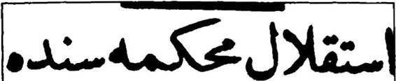
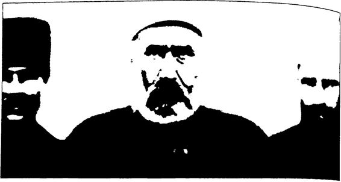

Prof. Sina Akşin’in ifadesiyle, “Hükümetin bildirgesi yanında, ona destek olmak üzere Saray cephesinin ideolojik örgütü sayılabile cek Teali İslam Cemiyetinin çıkardığı iki bildirgeden de söz etmek gerekir.”
Teali İslam Cemiyeti’nin Birinci Bildirisi (Ağustos 1920)
Bildiri, “Anadolu’nun masum ve mazlum ahalisine,” diye baş lamıştır. Bir zamanlar “şen ve bahtiyar” olan bu halk şimdi “boy nu bükük”, “mahzundur”. Nedeni on iki yıl önce çıkan İttihat ve Terakki’dir. Abdülhamid’i aldatıp, 31 Mart oyunuyla tahtdan indir diler. “Otuz seneden fazla hilafet makamında ve saltanatta bulunmuş bir padişaht zişanın kendine ve ailesine karşı reva gördükleri o hareket bu demlerin nasıl cibiliyetsiz ve hayasız bir eşkıya çetesi olduklarını göstermişti. Padişaha yaptıkları muameleden milletin başına neler ge tireceklerini anlamak güç bir şey değildi. Fakat biz o zaman anlayama dık. Cenabı Hak basiretimizi bağlamıştı. Yine 31 Mart Olayı’m baha ne ederek İstanbul’a gelen düzme Hareket Ordusu, yani İttihat çetesi payitahttaki asker neferlerini, zavallı vatan kuzularını din hizmetkârı olan talebei ulumu, ulemayı sokak ortalarında süngiilemişler ve bir çok mazlumları dar ağacına asmışlar ve Fatih Camii şerifine kurşun yağdırmışlardır. O olaylardan da bu heriflerin maksat ve mahiyetlerini anlamak lazım gelirdi. Fakat yine anlayamadık. O günden sonra bu eş kıya Devleti Osmaniye’nin idaresini ellerine aldılar.” Balkan Savaşımı çıkardılar, Babıali Baskım’nı, sopalı seçimleri yaptılar, “Mahmut Şev ket Paşa Olayı nedeniyle yine darağaçlarını kurdular. Damadı Şeyri yari Salih Paşa merhum ile beraber sürü sürü insanları astılar. Vapurlar dolusu binlerce halkı Sinop’a sürdüler”, “İstediklerini yaptılar ve bir kelime itiraz edeni boğdular, susturdular”. Dünya Savaşı’na katıldılar; yediler, içtiler, çaldılar, keyif ettiler, kalan herkes öldü, sefalet, acılar çekti. İmparatorluk parçalandı. “Milyonlarca İslam memleketlerim elden çıkardılar." Şimdi de “Anadolu'da Mustafa Kemal ve Kuvâyi Milliye maskaralart” çıktı. “Yunan askerlerinin önünden namerdane bir suretle kaçarken, zavallt, saf ve gafil ahali ve askerden topladık ları kuımetleri düşmanla harbe tutuşturmak ve *siz mevkinizde sebat edin biz şu taraftan onların arkasını çevireceğiz’ tarzında yalanlar ve hilelerle savuşup kaçarak zavallı askerlerimizi ve halkımızı boşu boşu na kırdırmak usulünü takip ediyorlar. Biçare millet bu yankesicilerin hilelerini, desiselerini hâlâ tamamen anlayamamıştır. Yazık, bin kere yazık ki gerek harp içinde ve gerek Mütareke’den sonra memleket bun ların fitne ve fesadı uğruna milyonlarca evladını telef ediyor da Talat, Enver, Cemal, Mustafa Kemal vesaire gibi beş on şakinin (eşkıyanın) vücudunu ortadan kaldırmak için icap eden küçük fedakârlığı göze aldıramayarak memleketi ve kendilerini ebedi tehlikeden kurtarmak ve selamete çıkarmak yolunu idrak edemedi ve hâlâ da edemiyor!” Millet aldanıyor, aldatılıyor; boşuna girip yenilerek çıktığı bir savaşın sonunda aklını başına toplayamıyor! “Kendisini hâlâ aldatmaya ça lışan heriflere diyemiyor ki: ‘Ey hainler! Ey Allah’tan korkmayan ve Peygamber’den haya etmeyen mahluklar, savaştınız, başımızı bin türlü belalara soktunuz, mağlup oldunuz, bizi de o yolda mahv ve perişan ettiniz, devletlere karşı mağlup olduk dediniz, mütareke imzaladınız, silahlarımızı, boğazlarımızı, payitahtımızı teslim ettiniz. Şimdi neye tekrar, gücünüz yetmediğini kabul ve imza ettiğiniz devletleri yeniden kızdırarak üzerimize husumet ve gazaplarını davet etmekten ve istila olunmayan bakire memleketimizi de istila ettirmekten başka bir faidesi olmayacak surette mecnunca hareketlere kalkışıyor ve bizi de eskisi gibi boşu boşuna kırdırıyorsunuz!’
İngiltere ve Fransa gibi “muazzam ve muntazam” devletlere mey dan okuyorlar! Bu yüzden İngilizleri kızdırıp üzerimize Yunanlıları musallat ettiler. “Savaşta yenildikten sonra uslu oturmak yenilginin sonucuna katlanarak telafisini sabrı sükûn ve aklı tedbir dairesinde sağlamaktan başka çare var mıdır?” Bir taraftan Yunanlılarla sava şıp diğer taraftan kaçıyorlar. Bu arada, “Şöyle direndik, böyle zayiat verdik” gibi yalanlarla halkı “iğfal” ediyorlar. “Düşünmüyorsunuz ki Yunanlılara fazla zayiat verdirmek bile bundan sonra bizim için hayırlı ve menfaatli bir şey olmaz.”
“Hem sizler, ey yalancı ve deni şakiler! Kendi milletimize karşı ecnebi milletlerden hiçbirinin yapmadığı eşkıyalık ve kötülükleri ya pıp, milleti, memleket eşrafını, ulemasını asıp keserek mallarını yağma ederken kendinize ne hakla, ne yüzle, ne utanmazlıkla Kuvâyi Milliye namını veriyorsunuz? Milleti öldürerek, mahvederek milletin hukuku nu koruyacaksınız öyle mi?”
“Utanmaz hainler, artık yetişir, yakamızı bırakın: Cenabı Hakk’ın gazabı ve laneti sizin üzerinize olsun. ”
Barış imzalandı. Kuvâyi iMilliye yüzünden galip devletlerin ye niden düşmanlığını kazandık! Devletler şimdi bize “Eğer Anadolu’da Kuvâyi Milliye isyanını devam ettirir ve bastırmazsanız İstanbul’u da elinizden alacağız diyorlar. Kuvâyi Milliye eşkıyası ise İstanbul’u da elimizden çıkarmak ve memlekete son hizmet şeklinde son ihanetlerini de yapmak için çalışıyorlar “Ey Anadolu’nun mazlum ve muhterem ahalisi”. Emin olunuz ki bu durum böyle devam edemez. “Memleketin her sancağını ve her bu cağını sarmış olan bu vahşet ateşi ve eşkıyalık böyle sürüp gidemez! Vaktimiz pek daraldı ve bu asilerin, bâğîlerin eşkıyalıklarından, cina yetlerinden halk bunaldı kaldı.” Bu ateşi kendimiz söndüremezsek, ga lip devletlerin bildirdikleri şekilde payitahtımız, İstanbul da elimizden alınacak ve Anadolu da ecnebilerce işgal edilecek. “Binaenaleyh, bu bâğîleri, bu asileri mümkün olduğu kadar az zaman içinde yakalayıp ortadan kaldırmak hepimiz için bir farzdır.”
Bildirinin sonunda bir de müjde verilmiştir: “Bu bâğî, bu asileri” “tedip ve tenkil” etmek üzere toplanacak kuvvetin başında “Halifei zişanımız ve sevgili hakanımız efendimiz hazretleri” bizzat bulunacak ve “oralara” gidecektir! “Hazır olunuz ve bu hainlerden, bu caniler den vatanı kurtarmak için size düşen görevi yerine getirmede kusur etmeyiniz. ”
Bildirinin sonunda askerlere şöyle seslenilmiştir:
“Ey kahraman askerler! Savaş yıllarında sizi cephe cephe sürük leyen ve aç susuz süründüren ve din kardeşlerinizin, hemşerilerinizin beyhude yere ölmelerine sebebiyet veren birkaç kişi arasında Mustafa Kemal, Ali Fuat, Bekir Sami gibi zalimler de var idi. İşte bu hainle rin harp cephesi haricinde kalmış olan aile fertlerinize kanlı elleriyle ne kadar facia yaşattıklarını savaştan dönüşünüzde gördünüz! Bugün yine o eşkıyalar, bâğîlerdir ki elleri birtakım yetimlerin, dul kadınların kanlarına bulandığı halde kalbinize sokularak sizi mahvetmek ve evlat larınızı yetim, eşlerinizi dul bırakmak ve servet ve saadetinizi tamamen çalmak için şeytanın dahi hatırına gelmeyen hile ve desiselere başvu ruyorhr. Siz bu zalimlerin cinayetlerine daha ne kadar göz yumacak sınız? Elinize aldığınız fetvai şerif ki Allah'ın emridir, okuduğunuz hattı münif ki, halifemizin, padişahımızın bir fermanıdır. Siz Allah'ın emrine, halifenin fermanına uyarak bu canileri, bu katil canavarları, daha ziyade yaşatmamakla memur ve mükellefsiniz. Şu alçaklar ve hempaları bu cinayetleri hep sizin sayenizde yapıyor. Bunların vücut larını tamamen dünyadan kaldırmak beşeriyet için, Müslümanlık için bir farz olmuştur."
“Memleketin başına bu kadar felaket getirmiş olan bu hainler daha yaşatılacak mı? Siz daha ne kadar böyle gafletle bunların gayri meşru emirlerine uyacaksınız? Korkuyoruz ki sizin bu aklınız, bu gaf letiniz, körü körüne hainlere itaatiniz daha pek çok mescitlerimizi ve mabetlerimizi harap eyleyecektir!”
“Askerler bu kadar uyuduğunuz artık yeter, bu zalimlere alet ol duğunuz artık yeter!”
“Padişahımız, halifemiz efendimiz hazretlerinin merhamet ve şef kat kucağı size açılmıştır. Hepiniz koşunuz geliniz, dünya ve ahiret saadetini ihraz ediniz! İşte size seçim. Allah’ını, Peygamberini ve padi şahını seven bu tarafa gelsin!”
İskilipli Atıf Hoca’nın başkanı olduğu Teali İslam Cemiyeti’nin yayımladığı bu bildirinin tamamını okuduğunuzda her şeyden önce Kurtuluş Savaşı’nın gerçekten bir “mucize” olduğunu anlıyorsunuz. Atatürk’ün, halkı işgalcilere karşı “tam bağımsızlık” parolasıyla bir araya toplayıp Kuvâyi Milliye’yi oluştururken, düzenli orduyu kurar ken yokluklar içinde hangi ihanetlerle, hangi şeytanca oyunlarla, hangi büyük “güçlüklerle” uğraştığını Teali İslam Cemiyeti’nin bu bildirisin den daha iyi ortaya koyacak belge azdır herhalde. Bu bildiri, Kurtuluş Savaşı’nın iç cephesinin önemini bütün çıplaklığıyla gözler önüne ser mektedir. Atatürk, Kurtuluş Savaşı’nda sadece İngiliz, Fransız, İtalyan, Yunan, Ermeni işgalcileri ve onlara yardım eden ayrılıkçı Rum ve Erme ni çeteleriyle değil, aynı zamanda içerideki özellikle “dini kullanan” ha inlerle ve onların kışkırttıkları isyancılarla mücadele etmiştir. Nitekim İstanbul hükümeti, İngiliz Muhipler Cemiyeti ve Teali İslam Cemiyeti gibi “dini kullanarak” Kurtuluş Savaşı’na karşı bayrak açan hain kuru luşların kışkırtmasıyla Anadolu’da 20’den fazla isyan çıkmıştır.
Atatürk ve silah arkadaşları başta olmak üzere Kuvâyi Milliyeti lere ağır hakaretlerle dolu bu bildiri halk için hazırlanmıştır. İskilipli Atıf Hoca’nın Teali İslam Cemiyeti aydınlara yönelik de bir bildiri ha zırlamıştır. Prof. Sina Akşin’in ifadesiyle bu, “daha ağdalı ve ağırbaşlı bir dille yazılmış bir bildirgedir.”'* Teali İslam Cemiyeti’nin İkinci Bildirisi (Ağustos 1920)
Bu bildiri dinsel vurgularla başlamıştır. İslam’ın “şu kimyahanei hayâtta” kılıçtan daha “büyük ve daha mukaddes” vazifeleri vardı. 0 da medeniyetti. Zaten İslamiyet her hususta “itidal (ılımlılık) esa sına müstenittir,” denilerek şaşırtıcı bir biçimde ta o günlerde “ılımlı İslam” göndermesi yapılmıştır! Osmanlı’nın geri kalmasında ilimden uzaklaşılmasının etkili olduğu belirtildikten sonra 1908 devriminde İt tihatçılar geldiler ve “milleti harpten harbe” sürüklediler denilmiştir. Dünyada hak, namus, fazilet için yaşamak ve ölmekle tanınan Müs lümanları yenilgi yanında “ihtiras ve fesat” ile lekelediler! Şimdi de Kuvâyi Milliye adı altında “İzmir hadisesinden” sonra işler yoluna girmeye başlamışken isyan ettiler! “Görülmedik, işitilmedik fecayi (facialar) ve mezalim yaptılar. Memlekette dış düşmanların yapmak istemeyeceği fenalıklar yaptılar.” Barış şartlarım bozdular. Bu yüzden barış koşulları “fevkettasavvur” bir biçime girdi. “Ehveni şer ola rak” Sevr imzalandı! Bugün artık devlet ve milletin gerçek çıkarı ve ilk görevi “Kuvâyi bâğıyenin fesadını ortadan kaldırıp” memleketin güvenliğini sağlamaktır. Artık Osmanlılar ve Müslümanlar uygarlık ve toplumsal mutluluk üzerinde yoğunlaşmalıdır. Bugüne kadar İstanbul hükümeti maruz kaldığı zorluklar içinde eşkıyaları yakalamak için ge reken başarıyı göstermedi. “Milletin üzerinde bu bâğîlerin tasallutunu henüz etkisiz hale getiremedi.” Millet de görev duygusuyla davranıp isyancıların bastırılması için yemin etmelidir.
25 Ağustos 1920'de de Anadolu semalarından Kuvâyi Milliye’nin “katiP olduğunun yazıldığı fetvalar atılmıştır.
Padişah Vahdettin, Sadrazam Damat Ferit, Şeyhülislam Mus tafa Sabri, Şeyhülislam Dürrizade Abdullah ve İskilipli Atıf el ele, Anadolu'da kelle koltukta vatan ve namus mücadelesi veren Kuvâyi Milliye'vi ve bu mücadelenin lideri Mustafa Kemal Atatürk’ü orta dan kaldırmak için dört koldan harekete geçmiştir. Nitekim, Padişah Vahdettin'in 5 Nisan 1920 tarihli hattı hümâyûnu. Damat Ferit’in bil dirgesi, bir önceki Şeyhülislam Dürrizade Abdullah’ın fetvası ile İski lipli Atıf ın Teali İslam Cemiyeti’nin bildirileri bir broşürde toplanarak basılmıştır.
Üç İhanet Bildirisi = Bir Hain İskilipli Atıf’m “hain” olmadığını iddia edenlerin ileri sürdükleri ne göre İzmir’in işgali üzerine Teali İslam Cemiyeti bir protesto beyan i namesi yayımlayarak işgali kınamıştır! Necip FazıPm aktardığına göre İskilipli Atıf 1926’da Ankara İstiklal Mahkemesi’nde yargılanır ken şöyle demiştir: “ Yunanlıların İzmir'i işgali üzerine bir beyanname hazırlayarak İstanbul'da İtilaf Devletleri mümessillerini ve bu şeni te cavüzü protesto etmiştik...”
Birincisi, bu beyannameye ilişkin elimizde hiçbir yazılı belge yok tur. İkincisi, İstanbul hükümeti; sadrazam ve padişah, İzmir’i İngilizle rin işgal edeceğini düşünerek “muhtemel bir İngiliz işgaline direnilme mesi için” önceden İzmir ve civarında gerekli önlemleri almışlardır. Bu çerçevede, örneğin direnişçi Nurettin Paşa’yı görevden alıp teslimiyetçi Ali Nadir Paşa ile İzzet Bey’i görevlendirmişlerdi. Ancak İzmir’in Yu nanlılarca işgal edilmesi hükümet çevrelerinde önce büyük bir şaşkınlık yaratmış, sonra ise protesto edilmiştir. Hatta hain Damat Ferit ile hain Ali Kemal bile İzmir’in Yunanlılarca işgalini kınayıp protesto etmiştir. İzmir’in Yunanlılarca işgali herkesçe üzüntüyle karşılanıp kınanmıştır.
Bu bakımdan Teali İslam Cemiyeti’nin, daha doğrusu o sıradaki adıyla Cemiyeti Müderrisinin de İzmir’in işgalini kınaması son derece nor mal bir durumdur. Bu kınama, cemiyet mensuplarının daha sonraki “ihanetlerini” görmezden gelmemizi gerektirmez.
Nitekim İskilipli Atıf Hoca’nın ikinci başkanı olduğu Cemiyeti Müderrisin, İzmir’in işgalinden (15 Mayıs 1919) yaklaşık dört ay son ra, 26 Eylül 1919’da yayımladığı bir bildiride Kuvâyi Milliyecileri “adi eşkıya”, “deli”, “cani”, “kudurmuş haydutlar” gibi çok ağır söz lerle suçlamıştır.
“Cemiyeti Müderrisin”in ikinci başkanı olan İskilipli Atıf, daha sonra “Teali İslam Cemiyeti”nin başkanı olmuştur. İskilipli Atıf’ın başkanlığındaki o Teali İslam Cemiyeti de 30 Ağustos 1920’de Yunan uçaklarıyla Anadolu’ya atılan iki “ihanet bildirisi” yayımlamıştır.
Her iki bildiride de Atatürk ve bazı silah arkadaşları başta olmak üzere Kuvâyi Milliyeciler “asi”, “eşkıya”, “bağı”, “hain”, “haydut”, “hırsız” gibi çok ağır sözlerle suçlanarak, öldürülmelerinin dine uygun olduğu bildirilmiş ve halktan “onların vücutlarını ortadan kaldırması” istenmiştir.
Hiç dile getirilmemesine karşın İskilipli Atıf Hoca, biri “Cemiyeti Müderrisinin ikinci başkanıyken, ikisi “Teali İslam Cemiyeti”nin bi rinci başkanıyken 19191920 yıllarındatoplam üç adet Kurtuluş Sa vaşı karşıtı bildiriden “doğrudan” sorumludur.
İskilipli Atıf Hoca’nın “hain” olmadığını iddia edenler bu işe de kendilerince bir “kılıf” uydurmaya çalışmışlardır: İskilipli’nin İstiklal Mahkemesi’ndeki sorgusunda kendisini savunmak için söylediklerine ve onun dava arkadaşlarından Tâhirü’lMevlevî’nin hatıralarına da yanarak ki o da Teali İslam Cemiyeti üyesidirşöyle bir savunma yoluna gitmişlerdir:
“Şeyhülislam Mustafa Sabri Efendinin marifetiyle Teali İslam Cemiyeti namına yazılmış ve bastırılmış bir beyanname zorla Teali İs lam Cemiyeti idare heyetine imzalatılmaya çalışılmıştı. Ama Atıf Hoca ve Tâhirü 'lMevlevî’nin şiddetle karşı koymaları üzerine de miihiirsiiz olarak Yunan uçaklarınca Anadolu'ya atıldı. Buna karşın, o zamanın Vakit gazetesinde Atıf Hoca tekzibname (yalanlama) yayımladı...”
Aynı hikâyeyi Necip Fazıl da kitabında tekrarlamıştır.
Birincisi, bildiriyi yazıp cemiyet üyelerine zorla imzalatmak is tediği söylenen Şeyhülislam Mustafa Sabri Efendi de Teali İslam Cemiyeti’nin kurucu üyelerinden biridir. İskilipli Atıf Hoca, hem Cemiveti Müderrisin’de hem de Teali İslam Cemiyeti’nde Mustafa Sabri ile el ele kol koladır: Bu cemiyetlerde her ikisi de başkandır. İs kilipli Atıf gerçekten bu bildiriye karşı olsa, ya bildirinin yayımlanıp Anadolu’ya atılmasını engellemesi ya da bu “ihanete” alet olan bir ce miyetten, hiç beklemeden, derhal istifa etmesi gerekirdi. Ancak bildiri yayımlanıp Yunan uçaklarıyla Anadolu’ya atılmıştır. Dolayısıyla cemi yet başkam olarak İskilipli Atıf bu fiili durumdan sorumludur. İş işten geçtikten sonra gazetede “tekzip” yayımlaması ve cemiyetten ayrılması bu işten sorumlu olmadığım değil, tam tersine sorumlu olduğu bu işten “paçayı kurtarmak” istediğini gösterir.
Nitekim İskilipli Atıf 1926’da Ankara İstiklal Mahkemesi’nde yar gılanırken mahkeme başkanı bu bildiriden sorumlu olduğunu söyleyin ce, İskilipli Atıf, “O bildirgeyi onaylamamak için en çok ben uğraştım!” diyerek kendini savunmak istemiştir. Bunun üzerine Mahkeme Başkanı (S) ile İskilipli Atıf Hoca (A) arasında şöyle bir konuşma geçmiştir:
S.: “Belgegöster.”
S.: “Sen bu tekzipnameyi ancak bir gizli maksat için yaparsın.” A.: “Ne maksadı beyefendi?”
S.: “Çünkü gördünüz ki bunlar (bildiriler) Yunan tayyareleriyle atıldı ve aksi tesir yaptı. Anadolu halkı Milli Mücadele’ye daha fazla destek vermiştir. Siz de bu kötü durumdan kurtulmak için bunu yap tınız. ”
A.: “Eğer öyle olsa idi onlarla beraber olurdum, cemiyete devam ederdim. Halbuki devam etmedim. Bu da bir delildir. Eğer devam etse idim bu düşünceniz akla gelebilirdi. ”
S.: “Sus bizi çileden çıkarma! Hürriyet ve İtilaftan ve Mustafa Sabri’den destek alarak bu cemiyeti kurduğun buradan belli oluyor. Sen hâlâ onlardan ayrıyım diyorsun. Biz budala olmalıyız ki bu sözlere inanalım. Bol bol atıyorsun!”
Görüldüğü gibi İstiklal Mahkemesi, Atıf Hoca başkanlığındaki Teali İslam Cemiyeti’nin Kurtuluş Savaşı sırasındaki “zararlı” faaliyet lerinin, “ihanet” bildirilerinin farkındadır. Hatta ileride görüleceği gibi yargılamanın odağında Atıf Hoca’nın Teali İslam Cemiyeti günlerinde ki zararlı faaliyetleri vardır.
İskilipli Atıf’ın bu “bildiri” konusunda “masum” olduğunu id dia edenler Atıf Hoca’nın kendisi de buna dahilnedense hep tek bir bildiriden söz etmektedirler. Bunu ya bilgisizlikten ya da gerçekleri saklamak için yapmaktadırlar. Çünkü ortada İskilipli Atıf’ın sorumlu olduğu bir değil tam üç bildiri vardır. İskilipli’nin bunu bilmemesi ola naksızdır tabii!
Diyelim ki İskilipli Atıf Hoca doğru söylüyor! Gerçekten de baş kanı olduğu “Teali İslam Cemiyeti”nin halk için hazırlayıp 30 Ağustos 1920’de Yunan uçaklarıyla Anadolu’ya attığı birinci bildiriden sorum lu değil! Hatta aynı dönemde aydınlar için hazırlanan ikinci bildiriden de sorumlu değil! Peki, ama bir yıl kadar önce ikinci başkanı olduğu Cemiyeti Müderrisin’in 26 Eylül 1919’da yayımladığı ve Kuvâyi Mil liyecileri “adi eşkıya”, “deli”, “cani”, “kudurmuş haydutlar” gibi çok ağır sözlerle suçlayan “ihanet bildirisinden” de sorumlu değil midir?
Ayrıca “Teali İslam Cemiyeti”nin ikinci başkanı olan Şeyhülis lam Mustafa Sabri’nin hazırladığı ve yeni Şeyhülislam Dürrizade Abdullah’ın 11 Nisan 1920’de yayımlayıp İstanbul hükümetinin İngi liz uçaklarıyla Anadolu’ya attırdığı “ihanet fetvasından” da haberi yok mudur? Üstelik söz konusu fetva, İskilipli Atıf Hoca’nın da yazı yaz dığı Kurtuluş Savaşı karşıtı Alemdar gazetesinde yayımlanmıştır?İskilipli Atıf, bu ihanet fetvasını yayımlayan ve sayfalarından Kurtu luş Savaşı karşıtlığı akan Alemdar gazetesinde yazmaya neden devam etmiştir? Ki İskilipli Atıf’ın yazı yazdığı o Alemdar gazetesi, “İslam kilidinin anahtarını, İngiltere’nin güvenilir eline teslim etmekte, İslam âlemi için hiçbir tehlike yoktur,” diye yazacak kadar alçalmıştır.Aynı Alemdar, İngiliz Muhipler Cemiyeti’nin yayın organı gibi çalış mıştır. Cemiyet, Alemdar’da sabah akşam Atatürk’e saldırmıştır.İskilipli Atıf yazı yazdığı gazetedeki bu durumdan habersiz midir?
Daha da önemlisi, Atatürk ve silah arkadaşlarının öldürülmele rinin “dinen caiz” olduğunu ilan eden Mustafa Sabri’nin bu ihanet fetvasına İskilipli Atıf Hoca’nın tepkisi ne olmuştur? Örneğin o ta rihte Şeyhülislamlığa getirilen Haydarizade İbrahim Efendi, Mustafa Sabri’nin kaleme aldığı fetvayı okuyunca imzalamayı reddedip istifa sını vermiştir. Peki, İskilipli Atıf Hoca bu ihanet fetvasını hazırlayan Mustafa Sabri ile ilişkilerine neden son vermemiştir? Neden hâlâ o “hain” din adamı müsvettesiyle aynı cemiyet çatısı altında yer almıştır?
Sorular, sorular, sorular!
İskilipli Atıf’ın Yol Arkadaşı Şeyhülislam Mustafa Sabri İskilipli Atıf Hoca’nın dava arkadaşlarından, yol arkadaşların dan 11 Nisan 1920 tarihli “ihanet fetvasının” yazarıŞeyhülislam Mustafa Sabri, mason locasına üyedir. Sırf İngilizlere yaranmak için sözde Ermeni soykırımından sorumlu tutulan Boğazlayan Kaymakamı Kemal Bey’in idam fetvasını hazırlamıştır. Sevr Antlaşması’nın im zalanmasını savunmuştur. Kitabında Kurtuluş Savaşı’nı çarpıtmış, yalanı gerçek, gerçeği yalan göstermeye çalışmıştır. Atatürk’ün İngiliz lerle anlaştığını, İzmir’i Yunanlıların kendiliğinden Türklere geri ver diğini iddia etmiştir. Başbakan Erdoğan’ın tarih hocalarından Kadir Mısıroğlu ile Mustafa Armağan’ın yalanlarının kaynaklarından biri bu hain Mustafa Sabri’nin yazdıklarıdır.
Şeyhülislam Mustafa Sabri de İskilipli Atıf Hoca’yı aratmayacak kadar “bağnaz” bir din anlayışına sahiptir. İslamiyetin “zorlaştırma yın, kolaylaştırın” hükmüne karşın bin dereden su getirip dini zorlaş tırmanın peşindedir. Örneğin Peyami Sabah gazetesindeki yazılarında Darülfünün’da kızlarla erkeklerin bir arada ders yapmalarına karşı çıkmış, Mütareke günlerinde Müslümanların içki satmasını, kadın ların erkeklerle bir arada çalıştıkları bazı işlere girmelerini, kadınların evden yanlarında bir erkekle dışarı çıkmalarını ve bildirilen kıyafet dı şında bir kıyafet giymelerini yasaklamayı düşünmüştür.
Celal Bayar, onun hakkında şunları yazmıştır:
“Mustafa Sabri Efendi, İngiliz himayesine girmekten başka kur tuluş yolu olmadığını iddia edenlerdendir. Milli Mücadele’nin şiddetli düşmantdır. Kürdistan Cemiyeti adındaki siyasi bir kurul ile müşterek vatanın parçalanmasına yol açan bir anlaşmayı reisi olduğu Hürriyet ve İtilaf Partisi Umum Merkezi adına imzalamıştır. Yakın tarihimizin gizli kalmış bu büyük ihanetine 9. cildimizde belgeleriyle temas edece ğim. Sadrazam Vekili olduğu sırada Ali Galip’i Sivas Kongresi üzerine yürümeye teşvik edenler arasındadır. ‘Kuvâyi Milliyecilerin katli va ciptir’ fetvasını yazan odur, imza eden Dürrizade’dir.”"
Mustafa Sabri, kitabında Kurtuluş Savaşı, Türklük ve Atatürk hakkında hakaretamiz ifadeler kullanmıştır.
Atatürk’ten şöyle söz etmiştir:
“Yani bütün hareketlerini hilafet makamına hizmet şeklinde gös termiş iken, nasıl kahpelik ve hayasızlıktır ki hilafetin en çirkin tezyif ler ve tahkirler altında birdenbire ilgasına cesaret etmiştir. ”
“Mustafa Kemal’in ve Ankara Hiikümeti’nin kahpeliklerini, sahtekârlıklarını şu ufacık mukaddime’ye sığdıracak değilim. Demek isterim ki bu şekil değiştirmeler, bu zıtlıkları işleyebilmek için insan utanmamazlıkta da kahraman olmalıdır. Hele dinsizlik olmadan hak sızlığın, hayasızlığın bu derecesi tasavvur olamaz. ”
“İki paralık Mustafa Kemal kuvvetinin baskısına boyun eğerek İngilizlerin, Fransızların ve sair devletlerin İstanbul’dan çekilip gitme lerini ancak Kemalistlerin idam ettiği Türk aklı kabul edebilir.”'Türklüğe bakışı da şöyledir:
“Benim elimden gelse Tiirkleri Arap yaparım, diğer Müslümanları da. Bunların vaktiyle Araplaşmadığına da çok eseflenirim. Arap dili, ne Türk diliyle ne de Çerkez diliyle kıyas kabul etmeyecek derecede üs tünlüğe sahip olduğundan, insanın, milliyetin küçüğüne sahip olup da onunla iftihar edeceğine büyüğüne sahip olarak onunla iftihar etmesi daha kârlı ve makul olur.”"
Kurtuluş Savaşı düşmanı “hain” Mustafa Sabri zamanla daha da ileri gidip Yarın gazetesinde Türklükten istifa ettiğini yazmıştır:
“Yalnız Müslüman ve insan olarak kalmak üzere, Türklükten Şe ref ı'c izzetimle istifa ediyorum Allah'm huzurunda... Tövbe Yarabbi, tövbe Türklüğüme! Beni Türk milletinden addetme..."
Mustafa Sabri, Kurruluş Savaşı'nda “vatana ihanet” ettiği için 150'Iikler listesine alınmıştır." Atatürk’ün başkomutanlığındaki Türk ordularının zaferinden sonra diğer hainlerle birlikte İngiliz Elçiliği’ne sığınmıştır. Ailesini de yanına alarak İngilizlerin bulduğu bir yük gemi siyle önce Mısır'a, sonra Yunanistan’a gitmiştir. Oradan İtalya’ya geçerek kaçak Padişah Vahdettin’i ziyaret edip Türkiye Cumhuriyeti karşıtı bazı tertiplerin içine girmiştir. Papa’dan bile yardım istemiştir.
İşte İskilipli Atıf Hoca, 19191920 yılları arasında hem “Cerrıiyetı Miiderrisin”de hem de “Teali İslam Cemyeti”nde bu “hain” Mustafa Sabri ile birliktedir.
Nitekim Atıf Hoca, 1926’da Ankara İstiklal Mahkemesinde yar gılanırken, mahkeme başkanı bu duruma şu sözlerle dikkat çekmiştir: *(...) Sen en karanlık günlerde Teali İslamcılık yap, Mustafa Sabri'nin yanında yer al da sonra karşımızda şöyle böyle söyle. Sözle riniz hiçbir gerçeğe uygun değildir. ”
AKP hükümeti döneminde 2007 yılında Tokat Belediyesi tarafın dan kurulan bir vakıfa “Şeyhülislam Mustafa Sabri Efendi Vakfı” adı verilmiştir.
AKP döneminde kahramanlığa terfi edilen hainlerden biri de odur!
Dini Siyasete Alet Etmek Suçtur 1924’te, halifeliğin kaldırılması, Tevhidi Tedrisat Kanunu’nun kabul edilmesi, Osmanlı hanedanının yurtdışına sürgün edilmesi gibi laiklik ağırlıklı devrimlerin yoğunluk kazanması ve genç Cumhuriyetin ağaların, şeyhlerin, şıhların “marabaları” durumundaki halkı, devletin özgür “bireyleri” haline getirmek için çalışmalar yapması, öteden beri dinden geçinen sahte hocalar ve asırlardır halkın kanını emen ağalar ile şeyhlerin tepkisini çekmiştir.
Bu arada 17 Şubat 1924’te Kâzım Karabekir Paşa'mn başkanlı ğında Terakkiperver Cumhuriyet Fırkası kurulmuştur. Programında, Parti, düşünceye ve din inanışına saygılıdır” sözüne yer vermesi, hem CHP’yi “dinsizlikle” suçlamak isteyenlerin hem de din istismarcıları ile Cumhuriyet düşmanlarının ekmeğine yağ sürmüştür. 1925 yılında bazı İstanbul gazeteleri yeni rejimi çok ağır şekilde eleştirmiştir.
1925 yılının başlarında Nakşibendi Tarikatımın en etkili olduğu Doğu bölgesinde “Hükümetin dinsizleştiği, milletin dinsizliğe götü rüldüğü, dinin kaldırılmak istendiği, dinin yitirilmekte olduğu, bunu önlemek gerektiği gibi söylenti ve propagandalarla devrim tepkilerinin belki de en büyüğü denebilecek olan...” Şeyh Said İsyanı başlamış tır. Hükümet hemen bölgede sıkıyönetim ilan etmiştir. Daha sonra da Adalet Bakanlığı, "Dini ve Dinin Kutsal Kavramlarını Siyasete Alet Edenler Hakkında” bir kanun tasarısı hazırlamıştır. Başbakanlıkça 24 Şubat 1925'te Meclis'e verilen kanun tasarısının gerekçesi şudur:
"{...) Söylenmesi çok üzücüdür ki, insanlığın, mutluluk ve yüksel me kılavuzu olarak Tanrı katından indirilmiş olan kutsal dinler, kötü lükler altındaki insanların kutsal haklarını kesin bir kararlılıkla mey dana çıkarma aracı olan devrimlerin amansız düşmanı olan kötüler elinde gericilik için kullanıldı. (...) Yüksek esaslarına rağmen İslamiyet de uzun yıllar kötü ailelerin elinde, kan dökücü istibdat idarelerinin gerekçesi olarak gösterildi. Kurtuluş Savaşı sırasında, memleketten ko vulan halifeler, din emri diye, kutsal bağımsızlık savaşı yapanların öl dürülmesine fetvalar çıkardılar. Yani devrimlerimizin en zor günlerin de din, düşmanlar yararına kullanıldı. Türk milletinin sosyal ve siyasal olgunluğunu ispatlayan Cumhuriyetimize karşı son günlerde gerici dü şünceleri kötüye kullanmak isteyenlerin, yine dinin kutsal buyrukları ile halktan bazılarını kandırmakta oldukları görülmüştür.
Tanrı ile vicdan arasında bir birleşme aracı olan dinler, siyaset ve bunun sonucu aşırı istek aracı oldukça kutsal temizliklerinin etkilene ceğine şüphe yoktur. Hükümetimiz Tanrı ile vicdan arasında, siyasetin ve siyasal kuruluşların aracılık yetkisi bulunmadığı kanısındadır. İsla miyet de bu görüşü pekiştirir. (...) Bundan böyle dinin ve dinin kutsal kavramlarının bir siyaset ve bunun sonucu aşırı yarar ve istek aracı edilmemesi için hazırlanan kanun ilişikte sunulmuştur. ”
Kanun tasarısının ilk maddesinde, “Dini ve dinin kutsal kavram larını siyasi amaçlara esas ya da alet etmek için dernekler kurulması yasaktır. Bu tür dernekleri kuranlar ya da bu derneklere girenler vatan haini sayılır. Dini ya da dinin kutsal kavramlarını alet ederek devletin şeklini değiştirmek ve başkalaştırmak ya da devletin güvenini bozmak veya dini ya da dinin kutsal kavramlarını alet ederek her ne surette olursa olsun halk arasına bozgunculuk ve ayrımcılık sokmak için gerek tek başına ve gerek toplu olarak sözle ya da yazı ile ya da fiilen ya da nutuk söyleyerek ya da yayın yaparak harekette bulunanlar da vatan haini sayılırlardenilmiştir. Tasarı, 25 Şubat 1925’te onaylanıp ka nunlaşmıştır.'
Fethi Okyar hükümeti, Şeyh Said İsyanı’m bastırmakta zorlanınca İsmet İnönü hükümeti kurulmuştur. İnönü hükümeti, 4 Mart 1925’te 578 sayılı Takriri Sükûn Kanunu’nu çıkarıp İstiklal Mahkemelerini kurmuştur. Üyeleri milletvekilleri arasından seçilen İstiklal Mahke meleri idama varan yetkilerle donatılmıştır.
Şapka Kanunu ve Şapka Kışkırtıcıları Bin bir güçlüğe rağmen emperyalizmi ve yerli İşbirlikçilerini dize getirerek kurulan Türkiye Cumhuriyeti, birkaç mürteci bozuntusuna pabuç bırakmamaya kararlıdır. Bu nedenle öncelikle Şeyh Said İsyanı bastırılmış ve isyana katılanlar, isyanda dolaylı veya doğrudan parmağı olanlar İstiklal Mahkemelerinde yargılanarak gerekli cezaları almıştır. İsyanda rolü olduğu gerekçesiyle Terakkiperver Cumhuriyet Fırkası da kapatılmıştır. Partinin İstanbul’daki ve Doğu illerindeki bazı binaların da yapılan aramalarında “kışkırtıcı” bazı yayınlara rastlanmıştır. Ata türk de Nutuk'ta Terakkiperver Fırka’nın “dini siyasete alet ederek” Şeyh Said İsyanı’nın ortaya çıkmasında etkili olduğunu belirtmiştir.
25 Kasım 1925’te 671 sayılı “Şapka Kanunu” kabul edilmiştir. Kanunun birinci maddesinde, “TBMM üyeleri ile genel, özel ve böl gesel idarelere ve bütün kuruluşlara bağlı memurlar ve müstahdemler Tiirk milletinin giymiş olduğu şapkayı giymek zorundadır. Türkiye balkının da genel başlığı şapka olup buna aykırı bir alışkanlığın sürdü rülmesini hükümet yasaklardenilmiştir.
Şapka Kanunu’na ilk tepki Erzurum’dan gelmiştir. Çarşının bir bö lümünü kapatan Gavur İmam diye tanınan bir hoca ile Osman Hoca adlı biri çevresine topladığı bazı kişilerle valinin evi ve makamı önüne giderek, “Gavur memur istemiyoruz/” diye bağırıp gösteri yapmak istemişler, an cak kolluk kuvvetleri gösteriyi dağıtıp göstericileri tutuklayarak mahke meye sevk etmiştir. Yargılamalar sonunda 33 kişi mahkûm olmuştur. Bu olay nedeniyle Erzurum’un bazı ilçelerinde sıkıyönetim ilan edilmiştir.
Sivas’ta duvarlara hükümete hakaretler içeren bir beyanname ya pıştırılmıştır. Bu işi organize edenlerden 32 kişi mahkûm olmuş, 2 kişi de sürülmüştür.
Kayseri’de Mekkeli ve Şeyh Said gibi Nakşibendi olduğunu söy leyerek kışkırtıcılık yapan Ahmet Hamdi adlı biri olay çıkaramadan yakalanıp mahkemeye verilmiştir.
Maraş’ta İbrahim Hoca adında biri camide etrafına topladığı bazı kişilerle hükümet karşıtı bir gösteri yapmak istemiş, fakat yakalanarak Ankara İstiklal Mahkemesi’ne gönderilmiştir.
Giresun’da Muharrem adlı bir hocanın elebaşlığında yine bir şap ka kışkırtıcılığı olayı tertiplenmiş, ancak bu olay da hemen bastırılarak olaya karışanlar hakkında yargı süreci başlatılmıştır.
Şapka kışkırtıcılığı sonunda en büyük olayların çıktığı illerden biri Rize’dir. Rize’de bir iki hocanın elebaşlığında “hükümetin dinsizliğe gitmesini önleme” adıyla hükümet karşıtı bir hareket yapılmak isten miş, bazı yalanlarla halk kışkırtılmış ancak olay derhal bastırılmıştır. Rize’ye gelen İstiklal Mahkemesi olaya el koyarak sorumluları yargıla yıp gerekli cezaları vermiştir.
“Rize’nin Potemya mıntıkasında İmam Şaban ile Muhtar Yakup Ağa ve riifekası, civar köyler halkını Ulu Cami nam mevkide içtima ya (toplanmaya) davet (etmişler) ve öteden beri şekavetle (eşkıyalıkla) me’luf (tanınan) birçok eşkiyayı silahlarıyla birlikte celp eylemişlerdir (bir araya toplamışlardır). ”
Gazetenin haberine göre halk bu çağrıyı genel bir “dua toplantısı” sanarak gelmiştir. Fakat sonradan toplananlar jandarma karakolunu basarak jandarmayı esir alıp Rize’yi yağmalamayı planlamışlardır. Haber şöyle devam ediyor:
“Muhtar Yakup’un akrabasından Biçeli Mehmet, ‘Ey ahali! An kara ihtilal içindedir! Mustafa Kemal Paşa üç yerinden yaralı olarak doktorlar elindedir! İsmet Paşa ortadan kaldırılmıştır! Dindar paşala rımız hükümeti ellerine aldılar! Şeriatı kurtarıyorlar! Korkacak bir şey kalmamıştır! Erzurum yapacağını yaptı! Biz de iştirak edelim,’ demiş tir. Yeni Pazar köyünden Muharrem Hoca’nın şapka aleyhinde fetva şeklinde muhaberatı, içtimada hazır hocalar tarafından nakil ve tekrar edilmiştir. ”
Rize’deki olaylar bastırıldıktan sonra “kışkırtıcılar” Rize’ye gelen istiklal Mahkemesi’nde yargılanarak gerekli cezaları almıştır.
 “Rize köylerindeki hadise failleri mahkûm olduMahkeme heyeti muhteremesi Giresun'a hareket etmiştir. Rize: 14(A.A) İstiklal Mah kemesi bugün Rize'nin bazı köylerine ait hadisei irticaiye muhake mesini intaç etti. Bugün hitam bulan mahkeme neticesinde ileri gelen muhrik ve müşviklerden 8 kişi idama, 14 kişi on beş sene, 2 kişi on sene, 9 kişi de beşer sene küreğe mahkûm edilmişlerdir. Kararları sami in ile beraber maznunlar da alkışlamışlardır. Mahkeme safahatı bütün Rize’de derin tesirler bırakmış, memnuniyetle karşılanmıştır.”
İstiklal Mahkemesi Rize’de 1213 Aralık’ta 143 sanığı yargıla mıştır. Yargılama sonunda bazı köy imamlarının halkı kışkırtıp ayak landırdığı ve İskilipli Atıf Hoca'nın Frenk Mukallitliği ve Şapka adlı kitapçığının da kışkırtıcılıkta etkili olduğu anlaşılmıştır."
Şapka Kanunu'na karşı yurdun değişik yerlerinde çıkan olay lar büyük bir halk desteği görmemiştir. Olayların elebaşlarının çoğu olayların çıktığı illerin halkından bile değildir. Örneğin Erzurum’daki elebaşı Hacı Osman’ın, Kayseri’deki Ahmet Hamdi’nin, Giresun’daki Şeyh Muharrem’in bu illere yeni gelmiş oldukları anlaşılmıştır.
Halkın geneli bu kışkırtıcılara büyük tepki duymuş ve Ankara’ya gönderdiği telgraflarla bu tür olayları çıkaranları “lanetlemiştir”. Ör neğin Erzurum Belediye Başkanı Nafiz, Müftü Sadık, Ticaret Odası Başkan Vekili Salim, Halk Partisi Başkanı Ahmet Rıza ve daha birçok şehir ileri gelenleri ortaklaşa imzaladıkları şu telgrafı Ankara’ya gön dermiştir:
“Ayaklanmaya, kışkırtmaya, gericiliğe karşı nasıl bir nefreti ol duğunu ve nasıl tez elden yok edilmesini bir borç saydığını, önceki olaylarda canına minnet bildiği hizmeti ile ispatlamış olan Erzurum'un temiz halkı bu üzücü olaydan ve kendisine yapılan iftiradan ötürü üzüntülerini bildirir ve sebep olanlara çok ağır bir şekilde ve asıl tertip çilerle kışkırtıcıların adalet sehpasında çırpınmaları suretiyle silinmesi ni, Erzurumluların en yürekten istekleri olarak arz ederiz”
Şapka Kanunu Yalanı ve Gerçekler Gerçek şu ki, 1925 yılının sonlarında yurdun değişik yerle rinde “Şapka Kanunu” üzerinden “din istismarı” yaparak halkı Cumhuriyet’e karşı kışkırtmak isteyenler vardır. Mesele bireysel ola rak insanların şapka takıp takmamaları meselesi değildir; mesele, Anadolu’da halkın arasına giren din adamı kılıklı bazı kışkırtıcıların “Şapka Kanunu”nu bahane ederek “din istismarı” ile Müslüman halkı Cumhuriyet hükümetine karşı isyan ettirmek istemesidir. Bu, 25 Şubat 1925 tarihli “Dini ve Dinin Kutsal Kavramlarını Siyasete Alet Edenler Hakkmdaki Kanun”a göre “vatana ihanet” suçudur.
. Mahmut Goloğlu’nun dediği gibi; “Burada şu noktayı da belirt mek yerinde olur ki, bu olaylarda mahkûm olanlar şapka giymedikle ri için ceza almamışlardır. Bunlar şapka giyilmesini protesto ettikleri, buna engel olmak istedikleri, bu nedenle başkaldırdıkları, ayaklanma teşebbüsünde bulundukları için cezalandırılmışlardır.”
Nitekim, 25 Kasım 1925 tarihli 671 sayılı Şapka Kanunu,“balkın kendiliğinden giymeye başladığı şapkayı mebuslar ile memurların da giymesini” zorunlu kılmıştır. Yani Şapka Kanunu, öncelikle halka de ğil, “mebuslar ve memurlarca, şapka giyme zorunluluğu getirmiştir. Çünkü kanunda belirtildiği gibi halk böyle bir “kanun zoruna” gerek kalmadan şapka giymeye başlamıştır zaten.”Dernek ki, genel olarak, toplumun kılığındaki değişiklik devrimi, kanun zoru ile olmamış, şap ka giyimi, bu gereğin milli vicdana mal edilmesiyle başlamıştı. Kanun zoru koyma ihtiyacı halka göre aydın olmaları gereken mebuslar ile memurlar için duyulmuştu.” Çok daha önemlisi, kanuna göre şapka giyilmemesi durumunda herhangi bir yaptırım da söz konusu değildir.
Şapka Kanunu’nun bu kanuna uymayanlara hiçbir yaptırım ge tirmemesi, kanunun istismar edilmesine neden olacağından, 676 sayılı kanunla ceza mevzuatında bir değişiklik yapılmıştır. Buna göre “Hü kümetçe tespit edilen kıyafeti hilafı selahiyet ve mezuniyeti iktisa eden eşhas üç aydan bir seneye kadar hap solunur. ” Yani Şapka Kanunu’na aykırı davrananların 3 aydan 1 yıla kadar hapsedileceği belirtilmiştir. Ceza Kanunu’nun 526. maddesine de “Memnuiyet (yasak) ve mecbu riyete aykırı hareket edenler iki aydan altı aya kadar hapis veya 1000 liradan 5000 liraya kadar para cezası ile cezalandırılır” hükmü eklen miştir.
Özetlemek gerekirse:
• İşte bu nedenle “şapka takmadığı için birini idam etmek” 671 sayılı Şapka Kanunu’na, 676 ve 526 sayılı Ceza Kanunlarına aykırıdır. İstiklal Mahkemeleri, şapka takmayanları değil. Şapka Kanunu’na karşı “din istismarıyla” halkı kışkırtan Cumhuriyet düşmanlarını yar gılayıp cezalandırmıştır. İdam edilenler de şapka takmadıkları için de ğil, Şapka Kanunu’na karşı halkı isyana teşvik ettikleri için 25 Şubat 1925 tarihli “Dini ve Dinin Kutsal Kavramlarım Siyasete Alet Edenler Hakkındakı Kanun”a. göre “vatana ihanet” suçundan idam edilmiştir.
Şimdi gelelim İskilipli Atıf Hoca’nın tutuklanarak yargılanıp idam edilmesine...
İskilipli Atıf Hoca Giresun İstiklal Mahkemesinde İskilipli Atıf Hoca, Şapka Kanunu’ndan bir buçuk yıl kadar önce Frenk Mukallitliği ve Şapka (Batı Taklitçiliği ve Şapka) adlı bir kitap çık yayımlamıştır. Şapka Kanunu çıktıktan sonra Kasım 1925’te Rize, Giresun, Maraş, Sivas gibi illerde Şapka Kanunu’na karşı başlayan “dinsel kışkırtmalarda” İskilipli Atıf Hoca’nın söz konusu kitapçığı da kullanılmıştır. Özellikle Rize isyanında İskilipli Atıf’ın kitapçığının et kili olduğu belirlenmiştir. Ayrıca Giresun’daki şapka karşıtı olayları çıkaranlardan biri yakalandıktan sonra polis sorgusunda İskilipli Atıf Hoca’nın, Şeriatın şapka giymeye müsaade etmediğini” belirttiğini, bu nedenle isyan ettiğini ifade etmiştir. Necip Fazıl, Son Devrin Din Mazlumlarında bu olayın İskilipli Atıf Hoca’yı suçlamak için politi kanın tertibi” olduğunu iddia etmiştir. İskilipli Atıf kaynaklı bu tür başka olaylar da vardır.
Bunun üzerine harekete geçen İstanbul Polis Müdürlüğü, Birinci Şube Raporu ile söz konusu kitabı yazıp değişik illere dağıtan İski lipli Atıf Hoca’yı Dahiliye Vekâleti’ne ihbar etmiştir. Böylece İskilipli Atıf tutuklanıp Giresun İstiklal Mahkemesi’nde 1618 Aralık 1925’te yargılanmıştır. Yargılanma sonunda mahkeme “kitapçıkların topla tılmasına ve dağıtılmasının yasaklanmasına” karar verip İskilipli Atıf Hoca’yı serbest bırakmıştır.
İskilipli Atıf Hoca, söz konusu Frenk Mukallitliği ve Şapka adlı kitapçığını Şapka Kanunu’ndan önce yazdığı, bu nedenle suçlama ya pılamayacağı gerekçesiyle beraat etmiştir. Necip Fazıl bile kitabında bu gerçeği kabul etmek zorunda kalmıştır: “Ortada kala kala ‘Frenk Mukallitliği’ isimli kitap kalıyor ki bu mücerret ilmi eser de Şapka Kanunu’ndan çok önce neşredildiği ve biç de böyle bir teşebbüsı tah min yoluyla kaleme alınmadığı için herhangi bir suç teşkil etmekten uzak bulunuyor.
Berat eden İskilipli Atıf, İstiklal Mahkemesi heyetiyle İstanbul’a dönmüştür. Necip Fazıl’ın ifadesiyle hoca, İstanbul’da Polis Mü dürlüğü’ndeyken evine şu mektubu yazmıştır:
“Bugün Karadeniz Vapuru ile İstanbul’a getirildim. İstiklal Mah kemesi heyeti de bizimle beraber İstanbul’a geldi. Giresun’da vukua gelen bir hadisede, kitap dolayısıyla beni alakadar zannettiler. Bila hare alakam olmadığı tebeyyün eyledi. Orada olan sui zandan halas oldum...”
Böylece 80 yıllık bir “yobaz yalanı” daha çürümüştür: “İskilipli Atıf Hoca, Şapka Kanunu’ndan bir buçuk yıl önce ‘Frenk Mukallitliği ve Şapka’ adlı bir kitapçık yazdığı için idam edildi!” yalanı yerle bir olmuştur.
Görüldüğü gibi İskilipli Atıf Hoca, Frenk Mukallitliği ve Şapka adlı kitapçığı nedeniyle yargılanmış ancak idam edilmeyip berat etmiştir.
Necip Fazıl’ın Duygu Sömürüsü (Birinci Perde)
Kitabında, Atıf Hoca’nın Giresun İstiklal Mahkemesi’nde yargı lanıp beraat ettiğini kabul eden Necip Fazıl, bu durumdan bile İskilipli Atıf’a pay çıkarmak, beraat eden İskilipli’yi “mağdur ve mazlum” göstermek için bu süreçle ilgili akla hayale gelmez senaryolar yazmış, masallar anlatmıştır.
İşte o göz yaşartıcı senaryo ve masallardan bir bölüm:
“Sene 1926... (gaza gelip seneyi de yanlış vermiş, 1925 olma lı!) Sonbahar... İskilipli Atıf Hoca’ntn Aksaray’da Laleli’de Fethibey Caddesinde 1 numaralı evi...
Hoca ikinci kattaki odasında sedire oturmuş, akşam namazının edasını bekliyor. Birden yakındaki caminin minaresinden yanık bir ses... Hoca ezanı, içinden kelimesi kelimesine tekrar ettikten sonra kıbleye dönüyor ve tekbir getirerek namaza giriyor.
Tam o anda zil sesi... Kapı çalınmakta... Atıf Hoca’nın baremi Zahide Hanım kapıda... Dışarıya sesleniyor:
Kim o?
Atıf Hoca’yı görmek istiyoruz.
Hoca namazda...
Siz kapıyı açın da bekleriz...
Kadın kapıyı açıyor. Kılık ve edaları şüphe verici üç adam...”Bu satırları okuyunca insan Necip Fazıl’ı da o sırada İskilipli Atıf Hoca’nın odasında yanında sanıyor! Öyle bir anlatıyor ki, adeta bir film sahnesi gibi! Hoca’nın odanın içinde nereye oturduğundan tutun da hangi namazı kılacağına kadar biliyor! Hoca sedirde akşam nama zının edasını bekliyormuş! Sonra okunan ezanı hoca da kelimesi keli mesine içinden tekrarlamış! Hocanın içinden ezanı kelimesi kelimesine tekrarladığını bilecek kadar hocaya yakın demek ki! Şu Allah’ın işine bakın ki, hoca tam da namazdayken geliyor onu götürecek polisler!Vah! Vah!.. Çok yazık!
Necip Fazıl duygu sömürüsüne şöyle devam etmiştir:
“Atıf Hoca’yı Müdüriyette bir hücreye tıkıyorlar. Penceresi tepe den avlu tarafına açılan boş ve pis bir oda. İçinde banko dedikleri tahta bir sıradan başka bir eşya yok.”
Necip Fazıl, İskilipli Atıf Hoca’yı penceresi tepeden avlu tarafına değil de yandan bahçe tarafına açılan eşya dolu ve tertemiz bir odaya koymamalarına üzülmüş belli ki!
Necip Fazıl, İskilipli Atıf’ı “mağdur ve mazlum” göstermeye çalı şırken Cumhuriyet polisini de bir o kadar “mağrur ve zalim” göster meye çalışmıştır:
“Deli gibi fırlayan Zahide Hanım, köprü üstünde kocasını yakalı yor. iki polis arasında, ancak katillere mahsus bir emniyet tertibi için de Galata Rıhtımı’na doğru götürülmektedir.
Zahide Hanım kocasının üzerine atılıyor:
Efendi, efendi!
Polisler zahide Hanım’ı şiddetle iterek kocasıyla konuşmasına en gel oluyorlar. Arkadan gelen üçüncü bir memur, kadıncağızı yaka paça sürüklemeye başlıyor. Kadın kaplan gibi atılıp kocasına mendil içinde bir şey uzatıyor ‘Para’.”
Film senaryosu mu, roman mı, masal mı belli değil, ama “tarih” olmadığı kesin...
İskilipli Atıf Hoca Ankara İstiklal Mahkemesinde İskilipli Atıf Hoca, Giresun İstiklal Mahkemesi’nden berat etmiş tir, ama oradaki yargılamada kendisine Frenk Mukallitliği ue Şapka adlı kitapçığın “toplatılarak dağıtılmasının yasaklandığı” da tebliğ edilmiştir. Yani söz konusu kitapçığın dağıtılması, satılması ve Ana dolu’daki dini kışkırtmalarda etkili olduğunun görülmesi durumunda İskilipli Atıf Hoca’nın yeniden yargılanması söz konusudur.
Nitekim çok geçmeden adı geçen kitapçığın dinsel kışkırtmalarla başlayan isyanların çıktığı bölgelerde yapılan aramalarda bulunması üzerine İskilipli Atıf bu sefer Ankara İstiklal Mahkemesi’ne gönderil miştir.
İskilipli Atıf yalnız değildir. “Ankara İstiklal Mahkemesi, Atıf Hoca’yla birlikte birçok hocanın muhakemesine hazırlanmaktadır. Bunlar arasında Uşaklı Hoca Süleyman, Uşak İmamHatip Mektebi Müdürü Antepli Salih Efendi, Bozkırlt Ahmet ue Sultaniyeli Durmuş bocalarla Dağıstanlı Şeyh Şerafiiddin ve arkadaşları vardır. Bunla rın hepsi şapka davasına muhalefetten ve Rize, Erzurum, Giresun, Sivas vesair yerlerdeki taşkınlıkları körüklemekten sanık... Bilhas sa Uşak İmamHatip Mektebi Müdürü Antepli Salih Hoca en fazla sıkıştırılanlardan... ”
Ankara İstiklal Mahkemesi, Erzurum, Giresun, Rize ve Sivas’ta Şapka Kanunu’nu bahane ederek dini kışkırtmalarda bulunanları ve bu kışkırtmalara alet olanları yargılamıştır. Mahkeme, İskilipli Atıf’ın söz konusu kitapçığının bu şapka karşıtı isyanlarda etkili olduğu kana atindedir. Çünkü mahkemenin elinde bu yönde bir hayli kanıt vardır.
Ankara İstiklal Mahkemesi, İskilipli Atıf Hoca’yı aynı amaca yö nelik iki ayrı suçtan yargılamıştır:
Sözle veya yazıyla dini kullanarak kışkırtıcılık yapmak ve savaşta düşmana yardım etmek suçlarının o zamanki kanunlarda karşılığı “va tana ihanettir”. Vatana ihanetin cezası da idamdır.
İskilipli Atıf Hoca’nın Ankara İstiklal Mahkemesi’nde yargılan masına Ocak 1926’da başlanmıştır. Yargılama şubat başlarında sona ermiştir.
Ankara İstiklal Mahkemesi Zabıtları incelendiğinde Ali (Çetinka ya), Necip Ali (Küçüka), (Kılıç) Ali ve Reşid (Galib)’ten oluşan mah keme heyetinin İskilipli Atıf Hoca’nın Frenk Mukallitliği ve Şapka adlı kitapçığının Şapka Kanunu’na karşı çıkan rejim karşıtı isyanlardaki rolünü ve Teali İslam Cemiyeti başkanı olduğu dönemde Kurtuluş Savaşı’na, Kuvâyi Milliye’ye karşı faaliyetlerini sorguladığı görüle cektir.
Mahkeme heyeti, isyan çıkan illerdeki bazı kitapçıları, İskilipli Atıf’ın kitaplarını satan bazı kişileri “şahit” olarak dinleyerek onlara İskilipli’nin kitabından satıp satmadıklarını, sattılarsa ne kadar sattık larım, bu kitapları nasıl edindiklerini vb. sorular sorarak söz konusu kitabın şapka karşıtı isyanlardaki rolünü anlamaya çalışmıştır.
İşte Ankara İstiklal Mahkemesi tutanaklarına yansıdığı şekliyle İskilipli Atıf’ın bu kitap satışlarıyla ilgili 26 Ocak 1926 tarihli sorgu sundan bir bölüm:
Mahkeme Başkanı (S): “Şimdi Rizeli Asım Efendi’ye gelelim. Bu kimdir?”
İskilipli Atıf Hoca (A): “Asım Efendi Beyazıd dersiamlarındandır ve kitap ticaretiyle meşgul olan bir adamdır. Bu adam hatta Hind'e filan kitap gönderir. Kitabım basıldıktan sonra bir gün dükkânıma gel di. ‘Bundan bana bir miktar ver. Rize'ye göndereceğim,' dedi. 30 tane veresiye olarak verdim. Veresiye defterine tabi kaydettim. Bir hafta sonra parasını getirdi. Mesele budur.”
S.: ‘Resmi soruşturma evrakına ve 16 Teşrinisani 341 (16 Kasım 1925) tarihinde yapılan bu faturaya göre paket eşya ile beraber Rize'ye gitmiş ve orada dağıtılmıştır.'
A.: ‘Defterin tarihine lütfen bakınız. Ona ben bir defa kitap ver dim. Tarihi de 30 Teşrinievvel 340'tır (30 Ekim 1924)tür.'
S.: ‘Onu bırak, o başka. Bu fatura sebebiyle 16 Teşrinisani 1341 (16 Kasım 1925) tarihinde gönderilmiştir.’
A.: ‘Bu tarihte Mustafa Asım burada yoktu. Polis Müdiiriyeti'nde bir polis memurunun huzurunda çıkardığımız kayıt (340 81924) Teşri nievvel veya Teşrinisanidir. Ondan başka kitap göndermedim.'
S.: ‘Bunu kim gönderdi?'
A.: ‘Bilmiyorum efendim! O zaman zaten toplu kitap kalmamıştı. Hepsi Hükümet’e geçti.’
S.: ‘Güvelizade kimdir?’
A.: ‘Bendeniz Güvelizade filan tanımam...'
(...)
S.: ‘Bu kitaptan 3000 nüsha bastırdığım söylüyorsun. Şapka me selesi çıktıktan sonra sen Anadolu’ya gönderiyorsun, yani bu kitaplar 341 Kasım T. Kasım (1925)’te gitmiştir.'
A.: ‘O vakit bende kitap yoktu. Yani hükümet almıştı.’
S.: “Vaziyet gayet sarihtir (açıktır). 16. TŞ. 341 (1925) tarihli fa tura ile sizin kitaplarınız da gönderiliyor. Toplanılmış olan bir kitap nasıl oluyor da tekrar böyle toplu olarak gönderiliyor?' ‘Biga’da Tüccar'dan Evliyazade Hilmi Efendi. Bu kimdir?’
‘Giresun'dan Muharrem Efendi'yi ve Haşan Efendi’yi tanıyorsu nuz değil mi?’
‘Tabir Efendi'yi tanır mısınız?"'
İskilipli Atıf bu kişilerden “Muharrem Efendi” dışındakileri tanı dığını ve gerçekten de hepsine kitap verdiğini, ancak çoğundan parası nı alamadığını belirtmiştir.
Mahkeme Başkanı Ali Çetinkaya, İskilipli Atıf Hoca’nın sorulara verdiği cevapları tatmin edici bulmayarak şöyle demiştir: “Bu kabul edilebilir bir ifade değildir.”
İskilipli Atıf, “Hakikat böyledir!” diye karşılık verince Ali Çetin kaya: “Kitabın basıldığı ve dağıtıldığı, sevk edildiği günler, memleketin tarihi için en acılı günlerdir. Fesat kaynağı, isyan çıkacağı günlerdir. Bütün bu hareketlerin bir gizli gayeye delalet eder,” demiştir.
Bunun üzerine İskilipli Atıf şu ilginç çıkışı yapmıştır: “Eğer Kürdistan'a göndermiş olsa idim, buyurduğunuz doğru idi. Fakat ben Anadolu'nun göbeğine gönderdim. Karahisar’a gönderdim."
Mahkeme Başkanı, “İmkân bulsa idin oraya da gönderirdin,” de miştir.
Görülen o ki İskilipli Atıf Hoca, Şeyh Said İsyanı’nın çıkışında rolü olmadığını ima etmektedir. Ancak karar tutanağında da görüle ceği gibi mahkemenin elinde bu yönde de belgeler vardır. Ayrıca mah keme, hocanın Rize, Maraş, Sivas, Giresun gibi illerdeki şapka karşıtı isyanların çıkışındaki rolüyle de ilgilenmektedir. Hoca bu gerçeği göz den kaçırmış veya bilerek böyle davranmıştır.
Mahkeme Heyeti, İskilipli Atıf’ın Frenk Mukallitliği ve Şapka ki tapçığının Kasım 1925’teki şapka isyanlarının çıkışında etkili olduğuna ve İskilipli’nin söz konusu kitapçığı Giresun İstiklal Mahkemesi’nin toplatıp dağıtılmasını yasaklamasına karşınisyan çıkan yerlere bizzat gönderdiğine, eldeki belgeler ve sorgulama sonucunda kanaat getir miştir.
Mahkeme daha sonra İskilipli Atıf Hoca’nın 19191920 yılların da “Teali İslam Cemiyeti” başkanı olduğu dönemdeki Kurtuluş Savaşı karşıtı faaliyetlerini sorgulamaya başlamıştır.
A.: 'Kim gönderiyor efendim}'
Kılıç Ali Bey: ‘Sen gönderiyorsun.’
A.: ‘Bendeniz bahsettiğiniz tarihte Asım Efendi vasıtasıyla 30 kişi ye gönderdim. Daha fazla göndermedim.’
(...)
Kılıç Ali Bey: ‘Bir adam kitaphaneden verilen siparişleri alıyor ve bir sandık içinde gönderiyor. ’
S.: '245 kuruş alırsınız. Diğer siparişlerinizi de inşallah ilerde ala cağım’ diyor. Sonra bu gönderilen adam da ifadesinde diyor ki: ‘Atıf Efendi’nin kitaplarından 30 tane çıkmıştır.’
A.: ‘TS. 341 (1925) bendenizde tek bir kitap yoktur efendim. Hiikümet’e tamamen teslim ettim. Tek bir kişi çıksın gönderdiğimi söylesin (...) Hakikaten böyle bir şey çıkarsa cezama razıyım. Bendeniz 30 tane Asım Efendi’yle gönderdim, başka göndermedim.’
S.: 'Bu yön isyanla alakadar olan en önemli yöndür. Ve isyanı ilgilendiren bölümdür. Sen de bunun için bu davaya dahil edildin.’Mahkeme heyetinin elindeki belge ve bilgiler, Rize başta olmak üzere yurdun değişik yerlerindeki şapka isyanlarında İskilipli Atıf Hoca’nın Frenk Mukallitliği ve Şapka kitapçığının etkili olduğunu gös termiştir. Mahkeme heyeti, bu isyanlarda İskilipli Atıf Hoca’nın rolü nü sorgulamıştır. Dikkat edilecek olursa İskilipli söz konusu kitapçığı yazdığı için veya başına şapka takmadığı için değil, söz konusu kitap çığım, mahkeme kararıyla toplatılmış olmasına rağmen, şapka isyanı çıkan bölgelere gönderip bu isyanların çıkmasında etkili olduğu için suçlanmıştır.
Mahkeme heyeti İskilipli Atıf Hoca’nın Anadolu’da hangi illere, kimlere, kaç adet kitapçık gönderdiğini tek tek sıralayarak İskilipli’yi sorularıyla sıkıştırmaya devam etmiştir. Sorulardan, mahkeme heyeti nin elinde İskilipli’nin faaliyetleriyle ilgili bir hayli belge ve bilgi olduğu anlaşılmaktadır.
'Kırklareli’nde Müftü Efendi’ye 50 tane göndermişsin.’ ‘Samsun’a, Salim Efendi’ye göndermişsin. Bu kimdir T ‘Kastamonu’da makine tamircisi Necati Efendi. Bu kimdiri’ ‘Tavukçuzade’nin hesabı ne oldu?’

İskilipli Atıf Hoca’nın idamdan önceki son fotoğrafı Bu sorgulamada İskilipli Atıf’a “Teali İslam Cemiyeti” başka nı olduğu dönemdeki zararlı faaliyetleri ve özellikle de bu cemiyetin yayınladığı Kuvâyi Milliye karşıtı bildiriler sorulmuştur. Daha önce de anlattığım gibi İskilipli söz konusu bildirilerden birini Şeyhülislam Mustafa Sabri’nin hazırlayıp zorla cemiyet üyelerine imzalatmak iste diğini ancak kendisinin buna “şiddetle” karşı çıktığını ve yayımlanan bildiriyle bir ilgisinin olmadığı konusunda bir gazetede “tekzip” ya yımladığını belirtmiştir. Bunun üzerine mahkeme başkanı, “Çünkü gördünüz ki bunlar (bildirgeler) Yunan tayyareleriyle atıldı ve aksi tesir yaptı. Anadolu halkı Milli Miicadele’ye daha fazla destek vermiştir. Siz de bu kötü durumdan kurtulmak için bunu yaptınız, ” demiştir.
İskilipli Atıf Hoca (A) ile mahkeme başkanı (S) arasında şu konuş ma geçmiştir:
“A.: ‘Vakit gazetesinin 1134. nüshasındaki tekzibi kim yazdı?’
S.: ‘Ben de sana cevap verdim, bunu din perdesi altında kötülükle rinize daha fazla devam etmek için yaptınız. ’
A.: ‘Beyefendi ben deli olmalıyım ki, kendi yaptığım işleri kendim yalanlayayım.’
S.: ‘Cemiyet namına rol yapıyorsunuz. Sana sorarım. Tüzüğünüzde vatan müdafaasına, mücadeleye dair ufak bir madde, bir fıkra göster.’
A.: ‘Beyefendi bu bir hayır cemiyetidir.’
S.: ‘Sus, sus bir parça utan. Saçın, sakalın ağarmış utanmak nedir zerre kadar bilmiyorsun Şurası bir gerçek ki İskilipli Atıf’ın “hayır cemiyeti” diye adlandır dığı “Teali İslam Cemiyeti” Kurtuluş Savaşı yıllarında bu vatanın, bu milletin hayrına değil, bu vatana, bu millete düşman olanların hayrına işler yapmıştır.
İskilipli Atıf’ın bu savunmasına mahkeme başkanının verdiği şu karşılık her şeyi özetlemektedir:
“(...) Sen en karanlık günlerde Teali İslamcılık yap, Mustafa Sabri’nin yanında yer al da sonra karşımızda şöyle böyle söyle. Sözle riniz hiçbir gerçeğe uygun değildir.”
“Hürriyet ve İtilaftan ve Mustafa Sabrı'den destek alarak bu ce miyeti kurduğun buradan belli oluyor. Sen hâlâ onlardan ayrıyım di yorsun. Biz budala olmalıyız ki bu sözlerine inanalım. Çıkarın!”
Necip FazıPın Duygu Sömürüsü (İkinci Perde)
Hatırlanacağı gibi Necip Fazıl’ın kitabında İskilipli Atıf Hoca se naryosundaki duygu sömürüsünün ilk perdesi, hocanın Giresun İstik lal Mahkemesi’ne götürülme süreciydi. Duygu sömürüsünün ikinci ve son perdesi ise hocanın Ankara İstiklal Mahkemesi’nde yargılandıktan sonra idamı bekleme sürecidir.
Necip Fazıl, kitabında “Keramet” başlığı altında İskilipli Atıf Hoca’nın gördüğü bir rüyadan söz etmiştir. Necip FazıPın anlattığı na göre İskilipli Atıf nezarette gördüğü rüyayı birlikte yargılandığı ve aynı koğuşta yattığı (!) arkadaşı Tâhirü’lMevlevî’ye anlatmıştır. Necip FazıPın “yazdığına” göre Tâhirü’lMevlevî ile İskilipli Atıf Hoca ara sında şöyle bir konuşma geçmiştir:
“‘Ne oldu Hocam, çabucak uyanıverdin.’
‘Uykudan murat hasıl oldu!'
‘Yani?’
‘Yani beklediğim rüyayı gördüm!’
Tâhirü’lMevlevî haşyet ve dehşetle ürperiyor:
‘Ne gördün?’
Atıf Hoca yatağında doğrulmuş ve müdafaasını karaladığı kâğıtları elinde büzmüştiir:
'Kâinatın fahrini gördüm. Bana, ‘Yanıma gelmek dururken ne diye müdafaa karalamakla uğraşıyorsun?’ dedi.’
Tâhirii’lMevlevî kendinden geçmiş gibidir.
‘Ne diyorsun?’
'Beni idam edecekler! Allah’ın Sevgilisi’ne kavuşacağım. (...) Gö receksin ki beni asacaklar! Başka bir şeye aklım ermez! Ferman en büyük kapıdan geliyor... ”’
Belli ki Necip Fazıl, İskilipli Atıf’ın “mağdur ve mazlum” olduğu nu, onu idam eden istiklal Mahkemesi’nin ise “haksız ve zalim” oldu ğunu daha etkili bir şekilde anlatabilmek için olaya bir de “keramet” süsü eklemeyi uygun görmüştür.
Ancak Necip Fazıl bu olayı kurgularken baltayı taşa vurmuştur! Çünkü Necip Fazıl’ın kitabında İskilipli Atıf Fioca’nın rüyasını anlatıp sohbet ettiği Tâhirü’lMevlevî Ankara’da hiçbir zaman İskilipli Atıf ile aynı koğuşu paylaşmamıştır. Ayrıca İskilipli’nin böyle bir rüya gördü ğüne dair de Tâhirü’lMevlevî’nin hatıratında hiçbir bilgi yoktur.
Anlayacağınız Necip Fazıl, duygu sömürüsü yapmak için yine uy durmuştur.
Necip Fazıl, İskilipli Atıf Hoca’nın idamından önceki son anlarını anlatırken duygu sömürüsünde zirveye ulaşmıştır!
“Şubat (1926) ayının 3’üncü Çarşamba gününü 4 Şubat Perşem beye bağlayan gece...
Atıf Hoca, idamlıklara mahsus hücrede. Üstü taş, altı taş, dört yanı taş... Taşlar ağlıyor; simsiyah bir rutubet gözyaşıyla ağlıyor. (Ne cip Fazıl şairliğini konuşturuyor!)
Demir kapının tepesinde parmaklıklı bir pencerecikten başka hiç bir menfez yok. Duvarda gerekince pranga vurulacaklara ait kocaman bir halka ve ona bağlı uzunca bir zincir... Bir de teneşirvari tahta bir kerevet...
Atıf Hoca, bu, kuzudan daha müdafaasız, mazlum, prangaya vu rulmamıştır. Bu kadarına ihtiyaç görülmemiş... Kerevetin yanı başında da bir testi su ve bir somun ekmek... Ekmeğin hiçbir lüzumu yok, fakat su abdest almak için son derece lazım. (...)
Eğer o sırada bir gardiyan veya hapishane memuru pencerecikten baksaydı göreceği manzara şuydu:
Kıbleye döndürülmüş kerevetin üstünde sarıklı bir adam, ellerini yukarıya kaldırmış dua etmektedir...”
Görüldüğü gibi Necip Fazıl, büyük şairliğini de kullanarak müthiş bir duygu sömürüsü yapmıştır. Hızını alamamış, bu duygu sömürüsü nü, İskilipli Atıf’ın idamından sonra da hocanın eşi Zahide Hanım’ın gördüğü rüyayı anlatarak devam ettirmiştir.
Necip FazıPm Bir Yalanı Daha Necip Fazıl, Son Devrin Din Mazlumları adlı kitabının “Atıf Hoca” bölümünde, İskilipli Atıf’ın bir gece önce gördüğü rüyanın (!) etkisiyle savunma yapmadığını iddia etmiştir.
Necip Fazıl’dan okuyalım:
“Ertesi günü mahkeme salonu her zamankinden kalabalık... (...) Mahkeme Reisi’nde taş gibi hal ve hislerini gizlemek isteyen bir tavır:
‘Müdafaalar başlasın!’
Herkes elinde bir kâğıt, uzun veya kısa müdafaasını değişik ton larda okuyadursun...
Reis taş gibi...
Atıf Hoca, mütevekkil ve mahzun, sırasını beklemekte...
Bilmem ne kadar zaman geçti.
Reis elini Atıf Hoca’ya uzattı:
‘Sıra sizde... ’
Atıf Hoca kalktı.
Aynen:
‘Hacet yok efendim! Müdafaayı mucip bir suçum olmadığı esasen tebeyyün etmiştir. Vicdanınızın vereceği hükme intizar ediyorum!’ Reisin mukabelesi:
‘Mahkemenin adaletinden emin olabilirsiniz. Oturunuz!” ~ Necip Fazıl, İskilipli Atıf Hoca’nın savunma yapmadığını iddia etmiştir, ancak o sırada İskilipli’yle birlikte yargılanıp berat eden Tâhirü’lMevlevî daha sonra yayımladığı Matbuat (basın) Âlemindeki Hayatım ve İstiklal Mahkemeleri adlı hatıralarında İskilipli Atıf’m çok uzun bir savunma yaptığını yazmıştır: “Atıf Efendi metin görünüyorJu. Suud Bey’in söylediğine göre gece sabaha kadar oturmuş, 810 tane eseri cedid kâğıdını doldurmak suretiyle bir müdafaanâme (savunma) yazmıştı. Yazılmışını görmediğim ve mealini (anlamını) öğrenemedi ğim o müdafaanâmenin kıraati (okunması) epeyce uzun sürmüştü ki, o mahkemede okunurken biz merdiven altında bekliyor, mahbesimizin (hapsedilen yer) kapısı kapalı olduğu için de okunan şeyi işitemiyor duk. (...) Atıf Efendi müdafaanâmesini bizzat okumuş ve hitamında (bitişinde) reis beye tevdi etmiş (vermişti),” diye yazmıştır.
Aslında son gün müdafaa yapmayan müftü Ali Rıza Efendi’dir.
Ayrıca Ankara İstiklal Mahkemesi Zabıtlarında da İskilipli Atıfın uzun bir savunma yaptığı görülmektedir.
Necip Fazıl kitabında, “Bir rivayete göre Atıf Hoca’nın ölü başına şapka geçirmişlerdir/” diyerek bir yalanı daha seslendirmiştir.
Necip Fazıl’da yalan, gerçek, uydurma hepsi bir arada....
Karar: Atıf Hoca Vatan Hainidir Başkan: Afyon Milletvekili (Kel) Ali (Çetinkaya), Savcı: Denizli Milletvekili Necip Ali (Küçüka), üyeler: Antep Milletvekili (Kılıç) Ali ve Aydın Milletvekili Reşit (Galip)’ten oluşan Ankara İstiklal Mahke mesi Heyeti 3 Şubat 1926 Çarşamba günkü 1. celsede kararını açıkla mıştır.
Karara göre İskilipli Atıf Hoca, Frenk Mukallitliği ve Şapka adlı kitapçığıyla mahkemenin bu kitapçığı toplatma ve satışını yasaklama kararına karşın“halkı isyan ve irticaya teşvik” ve Kurtuluş Savaşı yıllarında başkanlığını yaptığı Teali İslam Cemiyeti’nin “işgal ordusu na mukavemet edilmemesi” hususundaki bildirilerinibeyannamelerini Yunan uçaklarıyla Anadolu’ya attırması suçlarından idam edilmiştir.
Burada iki noktanın özellikle altını çizmek gerekir.
Birincisi: İskilipli Atıf Hoca’nın idam gerekçesi Frenk Mukallitliği ve Şapka adlı bir kitap yazmak veya şapka takmamak değildir. Mahke menin söz konusu kitabı toplatma ve satışını yasaklama kararma kar şın İskilipli Atıf’ın kitabını isyan çıkan yerlere dağıtarak “halkı isyan ve irticaya teşvik ” etmesidir.
İkincisi: İskilipli Atıf Hoca’nın idam gerekçesinde Teali İslam Ce miyeti başkanlığı ve Yunan uçaklarıyla atılan bildirilerbeyannameler konusunda çok önemli iki ayrıntı vardır. Bunlardan ilki; İskiliplinin Teali İslam Cemiyeti’nin hazırladığı tek bir beyannameden değil birkaç beyannameden sorumlu tutulmasıdır. Nitekim mahkeme tutanağında “çoğul” olarak, “Teali İslam Cemiyeti adına düzenlediği beyannamele ri...” ifadesi kullanılmıştır. Demek ki mahkeme diğer beyannamelerin de farkındadır. İkincisi de İskilipli’nin “Ben o beyannameye karşıydım! İmzalamadım! Gazetede tekzip yayınladım!” savunmasının mahkeme yi ikna etmemiş olmasıdır. Mahkeme tutanağında bu tekzip konusu İskilipli Atıf’m “inkâr tertibi” olarak değerlendirilmiştir.
İskilipli Atıf Hoca, Türk Ceza Kanunu’nun 55. Maddesi’nin, “TC'nin Teşkilatı Esasiye Kanununu tamamen veya kısmen tağyir... veya ifayı vazifeden menine cebren teşebbüs edenler idam olunur’ diyen muharrer fırkası mûcebince” vatan hainliği suçundan idam edilmiştir.
İskilipli Atıf Hoca’yla birlikte aynı suçtan hüküm giyen Babaeski Müftüsü Ali Rıza da idam cezasına çarptırılmıştır. Mahkeme, Baba eski Müftüsü Ali Rıza ile İskilipli Atıf Hoca’nın Kurtuluş Savaşı’nda Batı Anadolu’yu işgal etmiş olan Yunan ordusuna direnilmemesi için faaliyette bulunduklarını belgelemiştir. Müftü Ali Rıza’nın Yunan iş galine karşı çıkanları şikâyet edip cezalandırdığı belgelenmiştir. Bu müftü, Kurtuluş Savaşı devam ederken vatana ihanet suçundan on yıl ceza almış ancak genel aftan yararlanarak kurtulmuştu. Ancak serbest kaldıktan sonra halkı kışkırtmaya devam etmiş, Giresun’daki şapka isyanı sanıklarıyla da ilişki kurmuş ve kirli işlerinde “hasta” sözcüğünü parola olarak kullanmıştır.
Cezalar, 4 Şubat 1926’da Ankara’da Meclis binası yakınlarındaki Karaoğlan Çarşısı’nda infaz edilmiştir.
İskilipli Atıf Hoca ile eski Babaeski Müftüsü Ali Rıza’nm idam haberini veren bir gazete kupürü Suçsuz Hocalar Beraat Etmiştir İskilipli Atıf Hoca ile Ali Rıza Efendi’nin idam edildikleri davada yargılanan diğer sanıkların bir kısmı beş, on yıl hapisle cezalandırılmış, bir kısmı ise berat ettirilmiştir.
Berat ettirilenler arasında Ömer Rıza (Doğrul), Nuriosmaniye Ca mii İmamı Hafız Osman, Tâhirü’lMevlevî gibi din adamları da var dır. Eğer bizim Atatürk ve Cumhuriyet düşmanlarının iddia ettiği gibi İstiklal Mahkemeleri gerçekten de “sudan bahanelerle din adamlarını idam etmek isteseydi” İskilipli Atıf Hoca ve Ali Rıza Efendi dışında yargılanan bütün din adamlarını darağacında sallandırırdı.
Ankara İstiklal Mahkemesi sadece İskilipli Atıf Hoca’yı değil, Ömer Rıza Doğrul’u, Elmalılı Hamdi Yazır’ı ve Ahmet Hamdi Akseki’yi de Kurtuluş Savaşı sırasındaki bazı faaliyetleri nedeniyle yargılamıştır. Örneğin, daha sonra Atatürk’ün Kur’an tefsirini yaptıracağı Elmalılı Hamdi Yazır, Kurtuluş Savaşı yıllarında bir ara Damat Ferit hükü metinin Evkaf Nazırlığı’nı yaptığı için Ankara İstiklal Mahkemesi’nde yargılanıp berat etmiştir. Yine daha sonra Diyanet İşleri Başkanı Rıfat Börekçi’nin yardımcılığını yapacak olan ve çok değerli kitaplar yaza cak olan Ahmet Hamdi Akseki de Kurtuluş Savaşı sırasında “Tarikati Salahiye Cemiyeti”ne üye olduğu için Ankara İstiklal Mahkemesi’nde yargılanıp beraat etmiştir.
Prof. Yaşar Nuri Öztürk’ün şu tespitine aynen katılıyorum: “De mek oluyor ki, Müdafaai Hukuk kadrosu, değil İskilipli gibi daha baştan beri hıyanet şaibesi olan bir adamı, Elmalılı gibi temiz ve nezih bir allameyi, Akseki gibi bir ilim ve irfan adamını bile Milli Mücadele karşısında ‘Acaba’ türünden bir ihtimal ile hesaba çekmiştir.Çiinkii o kadro, hıyanet ve ihanetten çok büyük acılar çekti. İskilipli gibi hıya neti ve dışarı hesabına çalıştığı belgelenmiş bir adamı neden rahat bıra kacaktı? Milli Miicadele’den rahatsız olanlar keyiflensin diye mi?”Görüldüğü gibi İstiklal Mahkemeleri, Türk milletinin ölüm kalım mücadelesi olan Kurtuluş Savaşımdaki en küçük bir ihaneti bile ceza landırmayı ilke edinmiştir. Kurtuluş Savaşı’na ihanet edenin kim oldu ğuna, mesleğine, makamına, ırkına, dinine bakılmaksızın yargılanmış, suçu varsa cezalandırılmış, yoksa beraat ettirilmiştir.
Prof. Ergun Aybars’ın İstiklal Mahkemeleri adlı kitabındaki şu de ğerlendirme çok önemlidir:
“Bu olaylarda ağır cezalara mahkûm edilenler, şapka giymedik leri için değil, şapkayı bahane ederek gerici ayaklanma çıkarmak, kış kırtmak suretiyle dini politikaya alet edip vatana ihanet ettikleri için mahkûm edildiler. Görüldüğü gibi elebaşları asılırken, ikinci ve üçüncü derecede suçlular ağır hapis cezalarına çarptırıldılar. Suçu sadece şapka ya karşt koymak olan ferdi suçlar ise hafif şekilde cezalandırıldılar. ”
Önce İdam Edelim, Şahitleri Sonra Dinleriz (!)
Başbakan R. Tayyip Erdoğan, İstiklal Mahkemesi Başkanı Ali Çetinkaya’nın İskilipli Atıf Hoca’yı şahitleri dinlemeden idama mahkûm ettiğini iddia etmiştir. 23 Kasım 2011’de; "... Ali Çetinka ya, İskilipli Atıf Hoca’yı düzmece bir mahkemeyle, ‘Kararın infazı na, şahitlerin sonra dinlenmesine* diyerek idam eden Kel Ali lakaplı hâkim...” demiştir.
9 Haziran 2011’de de "... Hatta İskilipli Atıf Hoca’yı yargılama dan İstiklal Mahkemelerinde katleden Ali Çetinkaya’nın ismini, geç tiğimiz günlerde Ankara'nın CHP’li Yenimahalle Belediyesi bir parka verdi. İskilipli Atıf Hoca’nın yargılanması çok manidardı, ‘şahitler sonra dinlenmek suretiyle’ denilerek idam edildi," demiştir.
Başbakan’ın bu iddiaları içinde sadece iki doğru bilgi kırıntısı var dır. Birincisi, savcının İskilipli Atıf Hoca’nın 3 yıl hapsini istediği, ki onun da doğrusu 3 seneden 15 seneye kadar hapsinin istendiğidir.İkincisi de İskilipli’nin Ankara’da asıldığıdır. Onun dışındaki her şey yanlıştır, uydurmadır.
Ankara İstiklal Mahkemesi Zabıtları''na bakıldığında İskilipli Atıf Hoca yargılanırken çok sayıda “şahit” dinlendiği görülecektir. Ör neğin İşkilipli’yle birlikte aynı davadan yargılanan Ali Haydar Efendi ve Tâhirü’lMevlevı aynı zamanda şahit olarak dinlenmiştir. Ayrıca İskilipli’nin kitaplarını satan bazı kitapçılar da şahit olarak dinlenmiştir. Dahası, Başbakan Erdoğan’ın öve öve bitiremediği Necip Fazıl bile Son Devrin Din Mazlumları adlı kitabında İskilipli Atıf yargıla nırken şahitlerin dinlendiğini ifade etmiştir. Necip Fazıl’dan okuyalım: “Atıf Hoca ışıklı çehresiyle hâkim makamındaki tiplerin karşısında... ‘Oturunuz!'
Oturdu.
‘Şahit kitapçı Abdülaziz!’
Kitapçı Abdülaziz şahit parmaklığında.
‘Ben siyasetle meşgul bir insan değilim. Kitap basmak ve satmakla geçinirim. Bastığım ve sattığım kitapların güttüğü gayelerle de hiçbir iştirakim yoktur. Atıf Hoca’yı Babıali’de ve irfan muhabbetlerinde her kesin tanıdığı gibi ben de tanırım. (...) Bahsedilen Frenk Mukallitliği kitabından da sattım. Kimlere sattığımı bilemem...’
İkinci şahit yine Babıali’nin meşhur kitapçılarından Mihran Efendi’dir.
‘Atıf Hoca’yı şahsen tanımam. Fakat kitap yazan bir âlim olarak bilirim. (...) Bahis mevzuu eserden de 25 adet sattığımı hatırlıyorum...’ Çekilebilirsiniz!
Tâhirü’lMevlevî Efendi ayağa kalkınız?
‘Atıf Hoca’yı elbette tanırsınız? Nasıl tanırsınızV (...)”İtiraf etmeliyim ki, Başbakan Erdoğan’ın fikir babası Necip Fazıl’ın, bir gün Erdoğan’ın tarih tezlerinden birini çürüteceği aklıma gelmezdi!
İskilipli Atıf yargılanırken hem kendisi uzun uzun sorgulanıp din lenmiş, hem şahitler uzun uzun sorgulanıp dinlenmiş, hem de tutuklu sanıklar, Necip FazıPın ifadesiyle “geniş bir halka şeklinde hocayla yüzleştirilmiştir. ”
Ankara İstiklal Mahkemesi Zabıtları incelendiğinde de, Başbakan Erdoğan’ın iddia ettiği gibi mahkeme başkanı Ali Çetinkaya’nın, “Ka rarın infazına, şahitlerin sonra dinlenmesine!” veya bu anlama gelecek bir söz söylemediği görülecektir. Çünkü İskilipli Atıf’m duruşmasında şahitler dinlenmiştir. Şahitlerin dinlendiği bir duruşmada mahkeme başkanının böyle bir söz söylemesi zaten anlamsızdır.
Mahkeme sonrasında Kılıç Ali Bey, İskilipli Atıf Hoca’nın arkada şı Tâhirü’lMevlevî’ye: “Tabir Bey! Atıf Hoca’nın idamı hakkında ne ilersin}'' diye sorunca Tâhirü’lMevlevî, “Ne diyeyim efendim. Ciirmü varmış ki. cezasını gördii, demiştir.
Bütün bu tarihi gerçekler ışığında İskilipli Atıf Hoca’nm idamın dan, İstiklal Mahkemesi Başkanı (Kel) Ali Çetinkaya’yı sorumlu tut mak, Ankara İstiklal Mahkemesi’nin İskilipli’yi suçsuz, günahsız yere, boşu boşuna astırdığını iddia etmek gerçekdışıdır. Aynı şekilde, İskilip li Atıf Hoca’nın Frenk Mukallitliği ve Şapka adlı bir kitap yazdığı için veya şapka takmadığı için idam edildiğini iddia etmek de gerçekdışıdır.
Gerçek şu ki İskilipli Atıf Hoca, yazdığı kitapla halkı “isyan ve irticaya teşvik” ve Kurtuluş Savaşı karşıtı ihanet bildirileri yayımlayan “Teali İslam Cemiyeti”nin başkanı olmak gibi “vatana ihanet” sayılan suçlarından dolayı idam edilmiştir.
Şapka Takmadığı İçin İdam Edildiler Masalı İstiklal Mahkemeleri, şapka takmadığı için İskilipli Atıf Hoca da dahil tek bir kişiyi bile idam etmemiştir.
Cumhuriyet tarihinde genel anlamda iki İstiklal Mahkemesi var dır. İlk İstiklal Mahkemeleri, Kurtuluş Savaşı yıllarında kurulmuştur. Bu mahkemeler 19211923 yılları arasında görev yapmıştır (11 Eylül 192017 Şubat 1921 8 mahkemeve 20 Temmuz 1921Ekim 1925 5 mahkeme). Bu İstiklal Mahkemelerinde toplam 3811 idam kararı verilmiş, bunun da sadece 1054’ü infaz edilmiştir. İdam edilenler, asker kaçakları, asiler, hainler, casuslar, bozguncular, katiller, ırz düş manları, soyguncular, hırsızlar, halka eziyet eden görevliler ve işbirlik çi azınlıklar vs.dir.
İkinci İstiklal Mahkemeleri ise Cumhuriyet döneminde, 1923 1927 yılları arasında (3 mahkeme) kurulmuştur. Bu dönemdeki İstik lal Mahkemelerinde de toplam 576 idam kararı verilmiştir. İdam edilenler Türkiye Cumhuriyeti’nin rejimini değiştirmek veya Türkiye Cumhuriyeti’ni yıkmak için isyan edenler, devrimlere karşı halkı kışkır tanlar ile Atatürk’e suikast girişiminden yargılanıp suçlu bulunanlardır.
Bu dönemde “şapka olayını vesile ve istismar ederek halkı isya na kışkırtmak ve isyana katılmak” suçundan İskilipli Atıf Hoca dahil toplam 27 kişi idam edilmiştir. Bu 27 kişi şapka takmadığı için de ğil, “Şapka Kanunu”na karşı halkı kışkırtarak “isyan” çıkarttığı ve “vatana ihanet” niteliğindeki başka suçlardan dolayı idam edilmiştir. Tekrar ediyorum: Şapka takmadığı için tek bir Allah’ın kulu idam edil memiştir.
Görüldüğü gibi İstiklal Mahkemelerinde, birinci dönem, en fazla 1500, ikinci dönem 576 olmak üzere toplam 2076 kişi idam edilmiş tir. 5000, 10.000, 50.000, 100.000 değil 2076... Fransız ve Sovyet devrimlerinde idam edilenlerin yanında bu idamlar devede kulak kalır. Bu nedenle Türk Devrimi dünyanın en kansız devrimidir.
İstiklal Mahkemelerinin meşruiyetini sorgularken bu mahkemele rin “devrim mahkemeleri” olduğu gerçeği de göz ardı edilmemelidir.
80 yıl önceki İstiklal Mahkemeleri, İskilipli Atıf Hoca’yı Frenk Mukallitliği ve Şapka adlı kitapçığı veya şapka takmadığı için idam etmemiştir, ama 80 yıl sonra bugün Silivri Mahkemeleri gazeteci Tun cay Özakan’ı kitap yazdığı için ve kurduğu televizyonda hükümeti eleştirdiği için ağırlaştırılmış müebbet hapisle cezalandırmıştır. Bugün, (2013’te) “ileri demokrasi ülkesi” Türkiye’de Silivri Mahkemelerinde yaşananları görmezden gelenlerin 80 yıl önceki İstiklal Mahkemelerini “hukuksuzlukla” suçlamaları tek kelimeyle ikiyüzlülüktür.
TEZ: 5
TÜRKİYE’Yİ DEMİR AĞLARLA CHP DEĞİL AKP ÖRDÜ! BAYINDIRLIK BAKANI ALİ ÇETİNKAYA BOĞAZ KÖPRÜSÜ’NE KARŞI ÇIKTI!
“(...) Biliyorsunuz 10. Yıl Marşı’nda geçer, demir ağlarla ördük falan, neyi ördün? Hiçbir şey örmüş falan değilsin. Ortada duranlar belliydi. Demir ağlarla şimdi Türkiye'yi biz örüyoruz.
R. Tayyip Erdoğan, 17 Ağustos 2012
“(...) Nuri Demirağ Türkiye'ye çok büyük hizmetleri olmuş, büyük yatırımlar yapmış ve ilk Türk uçağım icat edendir, yapandır. 1930'lu yıllarda Türkiye'de uçak sanayinin kurulması için çaba har camış bir zattır. Şu anda bizim İstanbul Milletvekilimiz bu dönem Si vas Milletvekili adayımız Nursuna Memecan hanımefendinin dedesi bu zat. Nuri Demirağ, ki biz Sivas Havalimanı'nın adını Nuri Demi rağ Havalimanı koyduk, çünkü kendisi Divriği’dendir. 1931 yılında İstanbul’a bir köprü yapılması için hazırlık yapıyor ve ayrıntılı şekilde projeyi hazırlıyor. Yıl 1931. Atatürk çok heyecanlanıyor. Proje’den dolayı kutluyor. Nuri Demirağ’tn derhal Ankara'ya gitmesini ve pro jeye başlanmasını istiyor. O sırada Bayındırlık Bakanı Cellat Ali. Ali Çetinkaya, İsmet İnönü ile birlikte bu projeye hayır diyorlar. Hatta Nuri Demirağ, ‘Vasiyetimdir bu köprüden İnönü ve Çetinkaya geçe mez,’ diyor.”
"... Bunların genlerinde bozmak, engellemek var. CHP 1970’ler de değil, daha 1930'larda köprüye karşı çıkan bir partiydi. Birinci, İkinciye karşı çıktılar, şimdi 3. köprüye de karşı çıkıyorlar, ama biz onu da yapacağız. İstanbul Boğazı’ndan tüp geçide de raylı sisteme de
karşı çıktılar. Bitiriyoruz, 2 yıl kaldı. Hangi yüzle buralardan arabala rınızla geçiyorsunuz... ”
R. Tayyip Erdoğan, 18 Mayıs 2011
CEVAP: 5
Demiryolu ve Emperyalizm Başbakan Erdoğan’ın “Ney; ördün?” sorusuna cevap vermeden önce geçmişten günümüze Türkiye’nin demiryolu politikasına göz ata lım.
Osmanlı Devleti, 1870’lerde demiryoluyla tanışmıştır. Selanik, İstanbul, Aydın, İzmir gibi gayrimüslim nüfusun yoğun olarak yaşa dığı, nispeten gelişmiş liman kentlerinde demiryolu hatları işletmeye açılmıştır.
19. yüzyılın sonlarında ve 20. yüzyılın başlarında emperyalizm de miryollarını bir sömürü aracı olarak kullanmıştır.
“Emperyalizm, 19 ve 20. yüzyıllarda sömürmek istediği ülkeyi demirağlarla sımsıkı bir şekilde sarıp sarmalamıştır. Emperyalizmin tamamen kendi kapitalist çıkarları doğrultusunda planlayarak yapıp işlettiği demiryolları, sömürülen ülkenin kanını emen demir damarlar gibidir. Emperyalizm, sömürdüğü ülkelerin hammaddelerini ve ürünle rini çok çabuk bir şekilde fabrikalara ve pazarlara nakledebilmek için sömürü sisteminin bir parçası olarak demiryollarından yararlanmıştır. 19. yüzyılın sonları ile 20. yüzyılın başlarında emperyalist demirağ sis teminin en iyi işlediği ülkeler emperyalizmin kıskacındaki Hindistan ve Osmanlı’dır.”
Emperyalizm, topuyla tüfeğiyle ele geçirip sömürdüğü veya topuy la tüfeğiyle ele geçiremese de sömürmeye karar verdiği ülkeleri tama men kendi çıkarlarına hizmet edecek “emperyalist demir ağlarla” daha doğrusu “demir ağaçlarla” örmüştür.
OsmanlI’nın Demiryolları: Emperyalist Demir Ağaç Emperyalizm, Osmanlı gibi sanayileşmesini tamamlayamamış, teknolojide geri kalmış zengin hammadde kaynaklarına sahip ülkeleri demiryollarıyla sömürmüştür.
Emperyalizmin açgözlü şirketleri, Osmanlı gibi geri kalmış ülke lerde inşa ettikleri demiryollarından hem çok geniş imtiyazlar (ayrıca lıklar) elde etmişler, hem bu demiryollarını kendi çıkarlarına hizmet edecek şekilde inşa etmişlerdir. Örneğin emperyalist şirketlerin Os manlı topraklarında inşa ettiği demiryolları, Osmanlı tebaasının ya rarlanacağı biçimde doğubatı, kuzeygüney doğrultusunda birbirine bağlanan işlevsel ağlar biçiminde değil de hammadde kaynaklarının, tarımsal ürünlerin olduğu yerler ile limanlar arasında, birbirinden ta mamen bağımsız “ağaç dalları” biçiminde inşa edilmiştir.
Hicaz Demiryolu dışında Osmanlı demiryollarının tamamı İngi liz, Fransız ve Alman şirketlerince, yani “yabancı sermaye” ile yapılıp işletilmiştir. Emperyalist ülkeler kendi ulusal çıkarları için Osmanlı topraklarında demiryolları yapıp işleterek Osmanlı Devleti’ni iliklerine kadar sömürmüştür.
Osmanlı Devleti, demiryolu yaptırmak için İngiliz, Fransız ve Al man şirketlerine çok büyük imtiyazlar, çok geniş haklar vermiştir. İşte birkaç örnek:
1. İngilizlere Verilen İzmirAydın Demiryolu İmtiyazı 18571866 arasında inşa edilen İzmirAydın demiryolu, İngiliz emperyalizminin demiryolu sayesinde nasıl planlı ve programlı bir şe kilde Osmanlı’ya girdiğini göstermesi bakımından çok dikkat çekici bir örnektir.
Yapılan anlaşmaya göre demiryolu inşası için gerekli mallar gümrük vergisi ödenmeden ülkeye sokulabilecek, demiryolunun yapımı sırasında devlete ait topraklar, madenler ve ormanlar bedava kullanılabilecek ve demiryolunun işletmeye açılmasından sonra şirket, hattın kenarındaki 45 kilometrelik alan içinde bulunan madenleri çok az bir vergiyle işlet me hakkına sahip olacaktır. Osmanlı Devleti, şirkete kilometre garantisi vermiştir. Anlaşmaya göre; demiryollarının 70 kilometrelik ilk bölümü 1860 Eylül ayında bitirilecektir. Buna karşılık Osmanlı hükümeti demir yolunun ilk bölümünün açılmasından sonra 50 yıl süreyle her yıl şirket sermayesinin yüzde 6’sı kadar bir kârı garanti edecek ve eğer kâr bu oranın altına düşerse üstünü tamamlamayı kabul edecektir. Bütün bu ayrıcalıklara ek olarak Osmanlı hükümeti şirketin yönetimine karışma maya söz verdiği gibi Aydın demiryolu ile rekabet edebilecek şirketlerin kurulmasını önlemeyi de taahhüt etmiştir. Görülen o ki, Osmanlı hükü meti İngilizlere “Gel Ege’yi sömür!” demiştir adeta!
İngiltere’nin İzmirAydm arasında demiryolu yapmasının temel nedeni bölgenin İngiliz tüccarların kontrolünde olmasıdır. 1838 Bal talimanı Ticaret Antlaşmasından sonra Anadolu’da elini kolunu sal layarak ticaret yapan İngilizler, 1866’dan sonra Osmanlı Devleti’nin verimli topraklarının bulunduğu Ege bölgesinde toprak satın alarak çiftçilik yapmaya başlamışlardır. 1866 yılında İngilizlerin baskısı sonu cunda yabancılara taşınmaz mal sahibi olma hakkı tanınmıştır. Buna bağlı olarak 1868 yılında İzmir yakınlarındaki verimli toprakların üçte biri İngilizlerin tapulu malı haline gelmiştir. 1878 yılında bu oran yüzde 41’e çıkmıştır. İngilizlerin gelişiyle birlikte bölgede tarımda ma kineleşme de başlamıştır. Demiryolunun geçtiği bölgelerde geleneksel ürünler yerine sınai bitkileri yetiştirilmeye başlanmıştır. İzmirAydın demiryollarının sağladığı bu gelişimden yararlanan Müslüman Türk üreticiler ve tüccarlar değil, İngiliz üreticiler ve tüccarlar olmuştur. İzmirAydın demiryolu, hem demiryolu imtiyazını alan İngiliz şirketine hem de İngiliz devletine kazandırmıştır. Öyle ki İngiltere, dış borçlar da hil Türkiye’de yaptığı bütün yatırımların yüzde 43’ünü 18641913 yıl ları arasında “İzmirAydın Demiryolu Şirketi” aracılığıyla geri almıştır.
Ege bölgesinde İngilizlerin inşa ettikleri demiryolları, İngiliz em peryalizminin gelecekte Anadolu’yu işgal etmesini de kolaylaştırmış tır. Hatların yayıldığı alan dikkate alınacak olursa İzmir’e çıkacak iş gal orduları rahatlıkla Marmara ve İstanbul’a kadar erişebilecektir. Bu nedenle hatlar iç kesimlere, doğuya doğru kaydırılmış ve hattın İngiliz imtiyazından çıkması için AlaşehirAfyon hattı satın alınmıştı.
Alınanlara Verilen Anadolu Demiryolu İmtiyazı 1888’de imzalanan bir anlaşma ile Deutsche Bank 6 milyon frank lık bir ödemeyle daha önce işletmeye açılmış 91 kilometre uzunluğun daki Haydarpaşaİzmit hattını satın almıştır. Ayrıca Bursa ve Kütahya bağlantılı hatların yapımı için de ruhsat elde etmiştir.
HaydarpaşaİzmitAnkara demiryolu imtiyaz anlaşmasına göre Alman şirketi demiryolunun geçtiği arazileri istimlak kanununa göre satın alabilecek, eğer bu araziler devlet arazisi ise, şirkete parasız ve rilecektir. Şirket demiryolunun geçtiği yerlerde hattın iki yanında 5’er kilometrelik arazi parçası içinde, taş, kum ve tuğla ocakları açarak bunları inşaatın bitimine kadar kullanabilecektir.
Demiryolu yapımı için gerek Osmanlı içinden ve gerekse dışından getirilecek araçgereç, kereste, maden kömürü ile makine ve diğer mal zemeler için hiçbir gümrük vergisi alınmayacaktır. Şirketin çıkaracağı hisse senetleri tahvillerden de hiçbir vergi talep edilmeyecektir. Şirket, devlet ormanlarından bedava yararlanabilecektir. Demiryolunun ba kım ve onarım işleri şirket tarafından yapılacaktır. Ayrıca demiryo lunda çalışacak görevliler Osmanlı hükümetinin belirlediği bir kıyafe ti fes giymek zorunludurgiyeceklerdir. Şirket demiryolunun her iki yanında 20’şer kilometrelik arazi içinde maden araması yapabilecek ve bunları işletebilecektir. Şirket, demiryolunun yapımı sırasında ruhsat almaksızın eski eser kazıları yapabilecek ve demiryolu boyunca telgraf hattı döşeyebilecektir.
Osmanlı Devleti, süresi 99 yıl olan Haydarpaşaİzmit hattı için şirkete kilometre başına 10.300, İzmitAnkara hattı için 15.000 frank garanti vermiş ve bunun karşılığı olarak da Ankara, İzmir, Kütahya ve Ertuğrul vilayetlerinin öşürlerini göstermiş ve bunların Düyûnı Umûmiye sandıklarında korunmasını kabul etmiştir.
Bu arada Deutsche Bank, EskişehirKonya ve AnkaraKayseri ara sında demiryolu yapmak için de imtiyaz talebinde bulunmuştur.